Crédits photo
Les 939 photos de joueurs proviennent de Wikimedia Commons et sont réutilisées selon leur licence libre. Chaque image a été recadrée et détourée (fond retiré) ; les versions modifiées sont partagées sous la même licence que l'original. Les droits restent ceux de leurs auteurs, cités ci-dessous avec un lien vers la source et la licence.
Une photo ne correspond pas au bon joueur, ou tu es l'auteur d'une image et souhaites son retrait ? Écris à l'adresse indiquée dans les mentions légales.
 Aaron HickeyBrentfordPhoto : Bryan Berlin
Aaron HickeyBrentfordPhoto : Bryan Berlin
CC BY-SA 4.0 · source Aaron Wan-BissakaAston VillaPhoto : Egghead06
Aaron Wan-BissakaAston VillaPhoto : Egghead06
CC BY-SA 4.0 · source Abdel AbqarGetafePhoto : Nawfel Ajari
Abdel AbqarGetafePhoto : Nawfel Ajari
CC BY-SA 4.0 · source Abdoulaye N'DiayeParmePhoto : Paté kroute
Abdoulaye N'DiayeParmePhoto : Paté kroute
CC0 · source Abdul FatawuIpswichPhoto : Bryan Berlin
Abdul FatawuIpswichPhoto : Bryan Berlin
CC BY-SA 4.0 · source Abdülkadir ÖmürHull CityPhoto : senolsengul at Pixabay
Abdülkadir ÖmürHull CityPhoto : senolsengul at Pixabay
CC0 · source Achraf HakimiPSGPhoto : Laloumance
Achraf HakimiPSGPhoto : Laloumance
CC BY 4.0 · source Adam ObertCagliariPhoto : Antonio Fraioli
Adam ObertCagliariPhoto : Antonio Fraioli
CC BY-SA 4.0 · source Adam SmithBournemouthPhoto : [https://www.flickr.com/photos/cfcunofficial/ @cfcunofficial (Chelsea…
Adam SmithBournemouthPhoto : [https://www.flickr.com/photos/cfcunofficial/ @cfcunofficial (Chelsea…
CC BY-SA 2.0 · source Ademola LookmanAtléticoPhoto : Willibald11
Ademola LookmanAtléticoPhoto : Willibald11
CC BY-SA 4.0 · source Adrien RabiotMilanPhoto : Bryan Berlin
Adrien RabiotMilanPhoto : Bryan Berlin
CC BY-SA 4.0 · source Adrien TamèzeTorinoPhoto : Supporterhéninois
Adrien TamèzeTorinoPhoto : Supporterhéninois
CC0 · source Adrien TruffertBournemouthPhoto : Paté kroute
Adrien TruffertBournemouthPhoto : Paté kroute
CC0 · source Aihen MuñozReal SociedadPhoto : Giovanni Batista Rodriguez from San Sebastian-Donostia, España
Aihen MuñozReal SociedadPhoto : Giovanni Batista Rodriguez from San Sebastian-Donostia, España
CC BY-SA 2.0 · source Ainsley Maitland-NilesEvertonPhoto : Paté kroute
Ainsley Maitland-NilesEvertonPhoto : Paté kroute
CC0 · source Aïssa MandiLevantePhoto : Paté kroute
Aïssa MandiLevantePhoto : Paté kroute
CC0 · source Aitor ParedesAthletic ClubPhoto : Montxohache
Aitor ParedesAthletic ClubPhoto : Montxohache
CC BY-SA 4.0 · source Aji AleseSunderlandPhoto : Egghead06
Aji AleseSunderlandPhoto : Egghead06
CC BY-SA 4.0 · source Albert GuðmundssonLazioPhoto : Светлана Бекетова
Albert GuðmundssonLazioPhoto : Светлана Бекетова
CC BY-SA 3.0 · source Aleix GarcíaLeverkusenPhoto : Tam Tam from Shizuoka, JAPAN
Aleix GarcíaLeverkusenPhoto : Tam Tam from Shizuoka, JAPAN
CC BY-SA 2.0 · source Alejandro BaldeBarcelonePhoto : Pedro Semitiel from Cehegín, España
Alejandro BaldeBarcelonePhoto : Pedro Semitiel from Cehegín, España
CC BY 2.0 · source Alejandro GarnachoAston VillaPhoto : Ardfern
Alejandro GarnachoAston VillaPhoto : Ardfern
CC BY-SA 4.0 · source Aleksa TerzićFrosinonePhoto : Werner100359
Aleksa TerzićFrosinonePhoto : Werner100359
CC BY-SA 4.0 · source Aleksandar PavlovićBayernPhoto : Bryan Berlin
Aleksandar PavlovićBayernPhoto : Bryan Berlin
CC BY-SA 4.0 · source AlemãoRayo VallecanoPhoto : Ryosuke Yagi
AlemãoRayo VallecanoPhoto : Ryosuke Yagi
CC BY 2.0 · source Alessandro BastoniInterPhoto : MichaelEmilio
Alessandro BastoniInterPhoto : MichaelEmilio
CC BY 4.0 · source Alessandro BuongiornoNaplesPhoto : Supporterhéninois
Alessandro BuongiornoNaplesPhoto : Supporterhéninois
CC0 · source Alessandro DeiolaCagliariPhoto : Domenico Cucinella (Doc Cox at Italian Wikipedia)
Alessandro DeiolaCagliariPhoto : Domenico Cucinella (Doc Cox at Italian Wikipedia)
CC BY-SA 3.0 · source Alessio ZerbinFrosinonePhoto : Antonio Fraioli
Alessio ZerbinFrosinonePhoto : Antonio Fraioli
CC BY-SA 4.0 · source Álex BaenaAtléticoPhoto : Bryan Berlin
Álex BaenaAtléticoPhoto : Bryan Berlin
CC BY-SA 4.0 · source Alex FreemanVillarrealPhoto : Bryan Berlin
Alex FreemanVillarrealPhoto : Bryan Berlin
CC BY-SA 4.0 · source Álex GrimaldoAtléticoPhoto : Bryan Berlin
Álex GrimaldoAtléticoPhoto : Bryan Berlin
CC BY-SA 4.0 · source Alex IwobiFulhamPhoto : Антон Зайцев
Alex IwobiFulhamPhoto : Антон Зайцев
CC BY-SA 3.0 · source Álex JiménezFiorentinaPhoto : AFC Bournemouth
Álex JiménezFiorentinaPhoto : AFC Bournemouth
CC BY 3.0 · source Alex MeretNaplesPhoto : Werner100359
Alex MeretNaplesPhoto : Werner100359
CC BY-SA 4.0 · source Álex RemiroReal SociedadPhoto : Giovanni Batista Rodriguez from San Sebastian-Donostia, España
Álex RemiroReal SociedadPhoto : Giovanni Batista Rodriguez from San Sebastian-Donostia, España
CC BY-SA 2.0 · source Alex ScottBournemouthPhoto : James Boyes from UK
Alex ScottBournemouthPhoto : James Boyes from UK
CC BY 2.0 · source Alexander IsakLiverpoolPhoto : Rolandhino1
Alexander IsakLiverpoolPhoto : Rolandhino1
CC BY-SA 4.0 · source Alexander MeyerDortmundPhoto : Sandro Halank, Wikimedia Commons
Alexander MeyerDortmundPhoto : Sandro Halank, Wikimedia Commons
CC BY-SA 4.0 · source Alexander SørlothAtléticoPhoto : Bryan Berlin
Alexander SørlothAtléticoPhoto : Bryan Berlin
CC BY-SA 4.0 · source Alexander SchwolowMayencePhoto : James Steakley
Alexander SchwolowMayencePhoto : James Steakley
CC BY-SA 4.0 · source Alexis Claude-MauriceAugsbourgPhoto : Supporterhéninois
Alexis Claude-MauriceAugsbourgPhoto : Supporterhéninois
CC0 · source Alexis Mac AllisterLiverpoolPhoto : Bryan Berlin
Alexis Mac AllisterLiverpoolPhoto : Bryan Berlin
CC BY-SA 4.0 · source Alexis SaelemaekersMilanPhoto : Bryan Berlin
Alexis SaelemaekersMilanPhoto : Bryan Berlin
CC BY-SA 4.0 · source Alfonso PedrazaLazioPhoto : Антон Зайцев
Alfonso PedrazaLazioPhoto : Антон Зайцев
CC BY-SA 3.0 · source Alfred DuncanVenisePhoto : Pitroipa10
Alfred DuncanVenisePhoto : Pitroipa10
CC0 · source Alieu FaderaCagliariPhoto : feguifoot
Alieu FaderaCagliariPhoto : feguifoot
CC0 · source Alisson BeckerLiverpoolPhoto : Bryan Berlin
Alisson BeckerLiverpoolPhoto : Bryan Berlin
CC BY-SA 4.0 · source Alphonso DaviesBayernPhoto : Bryan Berlin
Alphonso DaviesBayernPhoto : Bryan Berlin
CC BY-SA 4.0 · source- Altay BayındırCeltaPhoto : -
CC0 · source  Álvaro CarrerasReal MadridPhoto : Sport Lisboa e Benfica
Álvaro CarrerasReal MadridPhoto : Sport Lisboa e Benfica
CC BY 3.0 · source Álvaro FidalgoBetisPhoto : Real Madrid C.F
Álvaro FidalgoBetisPhoto : Real Madrid C.F
CC BY 3.0 · source Álvaro OdriozolaReal SociedadPhoto : Estevoaei
Álvaro OdriozolaReal SociedadPhoto : Estevoaei
CC BY-SA 4.0 · source Amad DialloMan UnitedPhoto : Bryan Berlin
Amad DialloMan UnitedPhoto : Bryan Berlin
CC BY-SA 4.0 · source Amadou OnanaAston VillaPhoto : Bryan Berlin
Amadou OnanaAston VillaPhoto : Bryan Berlin
CC BY-SA 4.0 · source Amar DedićNewcastlePhoto : Werner100359
Amar DedićNewcastlePhoto : Werner100359
CC BY-SA 4.0 · source Anan KhalailiCrystal PalacePhoto : Sidney.Cortez
Anan KhalailiCrystal PalacePhoto : Sidney.Cortez
CC BY-SA 4.0 · source Ander BarrenetxeaReal SociedadPhoto : Giovanni Batista Rodriguez from San Sebastian-Donostia, España
Ander BarrenetxeaReal SociedadPhoto : Giovanni Batista Rodriguez from San Sebastian-Donostia, España
CC BY-SA 2.0 · source Ander GuevaraAlavésPhoto : Giovanni Batista Rodriguez from San Sebastian-Donostia, España
Ander GuevaraAlavésPhoto : Giovanni Batista Rodriguez from San Sebastian-Donostia, España
CC BY-SA 2.0 · source Andrea AdoranteVenisePhoto : DavidNeres07
Andrea AdoranteVenisePhoto : DavidNeres07
CC0 · source Andreas ChristensenBarcelonePhoto : Антон Зайцев
Andreas ChristensenBarcelonePhoto : Антон Зайцев
CC BY-SA 3.0 · source Andrey SantosMan UnitedPhoto : Paté kroute
Andrey SantosMan UnitedPhoto : Paté kroute
CC0 · source Andriy LuninReal MadridPhoto : Fotografías Archimadrid.es
Andriy LuninReal MadridPhoto : Fotografías Archimadrid.es
CC BY 2.0 · source Andy DioufInterPhoto : Paté kroute
Andy DioufInterPhoto : Paté kroute
CC0 · source Andy RobertsonTottenhamPhoto : Bryan Berlin
Andy RobertsonTottenhamPhoto : Bryan Berlin
CC BY-SA 4.0 · source Ange-Yoan BonnyInterPhoto : Bryan Berlin
Ange-Yoan BonnyInterPhoto : Bryan Berlin
CC BY-SA 4.0 · source AngeliñoLa CorognePhoto : Steffen Prößdorf
AngeliñoLa CorognePhoto : Steffen Prößdorf
CC BY-SA 4.0 · source Angelo StillerStuttgartPhoto : Jeollo von VfB-exklusiv.de
Angelo StillerStuttgartPhoto : Jeollo von VfB-exklusiv.de
CC BY-SA 4.0 · source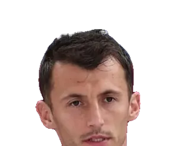
Ante BudimirOsasunaPhoto : PIXSELL
CC BY 3.0 · source Anthony ElangaNewcastlePhoto : Amanda Aikioniemi
Anthony ElangaNewcastlePhoto : Amanda Aikioniemi
Public domain · source Anthony GordonBarcelonePhoto : YantsImages
Anthony GordonBarcelonePhoto : YantsImages
CC BY-SA 4.0 · source- Anthony JungFribourgPhoto : Christian Bier
CC BY-SA 4.0 · source  Antoine SemenyoMan CityPhoto : Bryan Berlin
Antoine SemenyoMan CityPhoto : Bryan Berlin
CC BY-SA 4.0 · source Antonín KinskýTottenhamPhoto : Рыбакова Елена
Antonín KinskýTottenhamPhoto : Рыбакова Елена
CC BY-SA 3.0 · source Antonio NusaLeipzigPhoto : Bryan Berlin
Antonio NusaLeipzigPhoto : Bryan Berlin
CC BY-SA 4.0 · source Antonio RüdigerReal MadridPhoto : Bryan Berlin
Antonio RüdigerReal MadridPhoto : Bryan Berlin
CC BY-SA 4.0 · source AntonyBetisPhoto : Marcelo Figueras
AntonyBetisPhoto : Marcelo Figueras
Public domain · source Ao TanakaLeedsPhoto : 内閣官房内閣広報室
Ao TanakaLeedsPhoto : 内閣官房内閣広報室
CC BY 4.0 · source Archie GrayTottenhamPhoto : Jim Easton
Archie GrayTottenhamPhoto : Jim Easton
CC0 · source Arda GülerReal MadridPhoto : LawEnthusiast
Arda GülerReal MadridPhoto : LawEnthusiast
CC BY-SA 4.0 · source Arnaud KalimuendoNottingham ForestPhoto : Paté kroute
Arnaud KalimuendoNottingham ForestPhoto : Paté kroute
CC0 · source Arsen ZakharyanReal SociedadPhoto : ФК "Динамо" Москва
Arsen ZakharyanReal SociedadPhoto : ФК "Динамо" Москва
CC BY-SA 3.0 · source Artem DovbykBolognePhoto : СТАНИСЛАВ ВЕДМИДЬ
Artem DovbykBolognePhoto : СТАНИСЛАВ ВЕДМИДЬ
CC BY-SA 3.0 · source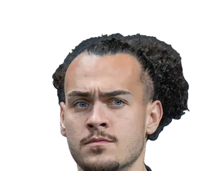
Arthur TheateBolognePhoto : Bryan Berlin
CC BY-SA 4.0 · source Asier VillalibreRacing SantanderPhoto : Werner100359
Asier VillalibreRacing SantanderPhoto : Werner100359
CC BY-SA 3.0 · source Assane DiaoCômePhoto : Bryan Berlin
Assane DiaoCômePhoto : Bryan Berlin
CC BY-SA 4.0 · source Aurélien TchouaméniReal MadridPhoto : Bryan Berlin
Aurélien TchouaméniReal MadridPhoto : Bryan Berlin
CC BY-SA 4.0 · source Axel DisasiCrystal PalacePhoto : Ksiamon
Axel DisasiCrystal PalacePhoto : Ksiamon
CC BY-SA 4.0 · source Aymeric LaporteAthletic ClubPhoto : Bryan Berlin
Aymeric LaporteAthletic ClubPhoto : Bryan Berlin
CC BY-SA 4.0 · source Ayoze PérezVillarrealPhoto : David J Nelson Sports Photography
Ayoze PérezVillarrealPhoto : David J Nelson Sports Photography
CC0 · source Azor MatusiwaIpswichPhoto : Supporterhéninois
Azor MatusiwaIpswichPhoto : Supporterhéninois
CC0 · source Bafodé DiakitéBournemouthPhoto : Paté kroute
Bafodé DiakitéBournemouthPhoto : Paté kroute
CC0 · source BahAugsbourgPhoto : Sport Lisboa e Benfica
BahAugsbourgPhoto : Sport Lisboa e Benfica
CC BY 3.0 · source Bartol FranjićVenisePhoto : PIXSELL
Bartol FranjićVenisePhoto : PIXSELL
CC BY 3.0 · source BeitiaReal SociedadPhoto : Giovanni Batista Rodriguez from San Sebastian-Donostia, España
BeitiaReal SociedadPhoto : Giovanni Batista Rodriguez from San Sebastian-Donostia, España
CC BY-SA 2.0 · source Ben ChilwellCrystal PalacePhoto : Дмитрий Пукалик
Ben ChilwellCrystal PalacePhoto : Дмитрий Пукалик
CC BY-SA 3.0 · source Ben DaviesTottenhamPhoto : Steindy (d) 16:11, 10 November 2016 (UTC)
Ben DaviesTottenhamPhoto : Steindy (d) 16:11, 10 November 2016 (UTC)
CC BY-SA 3.0 · source Ben DoakBournemouthPhoto : Bryan Berlin
Ben DoakBournemouthPhoto : Bryan Berlin
CC BY-SA 4.0 · source Beñat PradosAthletic ClubPhoto : Montxohache
Beñat PradosAthletic ClubPhoto : Montxohache
CC BY-SA 4.0 · source Beñat TurrientesReal SociedadPhoto : Estevoaei
Beñat TurrientesReal SociedadPhoto : Estevoaei
CC BY-SA 4.0 · source Benedict HollerbachMayencePhoto : Winfrey
Benedict HollerbachMayencePhoto : Winfrey
CC BY-SA 4.0 · source Benjamin CremaschiParmePhoto : Bryan Berlin
Benjamin CremaschiParmePhoto : Bryan Berlin
CC BY-SA 4.0 · source Benjamin HenrichsLeipzigPhoto : Steffen Prößdorf
Benjamin HenrichsLeipzigPhoto : Steffen Prößdorf
CC BY-SA 4.0 · source Benjamin LecomteFulhamPhoto : Paté kroute
Benjamin LecomteFulhamPhoto : Paté kroute
CC0 · source Benjamin PavardInterPhoto : Кирилл Венедиктов
Benjamin PavardInterPhoto : Кирилл Венедиктов
CC BY-SA 3.0 · source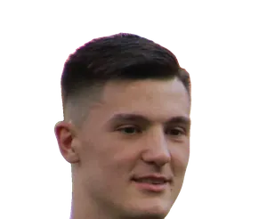
Benjamin ŠeškoMan UnitedPhoto : Werner100359
CC BY-SA 4.0 · source Benoît BadiashileNaplesPhoto : The White House
Benoît BadiashileNaplesPhoto : The White House
Public domain · source Bernardo SilvaReal MadridPhoto : Bryan Berlin
Bernardo SilvaReal MadridPhoto : Bryan Berlin
CC BY-SA 4.0 · source Bernd LenoFulhamPhoto : Granada
Bernd LenoFulhamPhoto : Granada
CC BY-SA 4.0 · source BetoFiorentinaPhoto : Вячеслав Евдокимов
BetoFiorentinaPhoto : Вячеслав Евдокимов
CC BY-SA 3.0 · source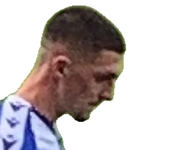
Bobby ThomasCoventryPhoto : CLEMENATOR
CC BY-SA 4.0 · source Boris RadunovićCagliariPhoto : Granada
Boris RadunovićCagliariPhoto : Granada
CC BY-SA 4.0 · source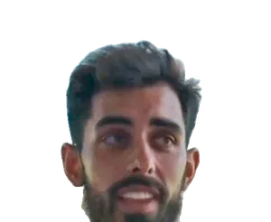
Borja IglesiasCeltaPhoto : CorreoTelevisión Santiago de Compostela
CC BY-SA 4.0 · source BoselliGetafePhoto : Cazadoroculto
BoselliGetafePhoto : Cazadoroculto
Public domain · source Boubacar KamaraAston VillaPhoto : Supporterhéninois
Boubacar KamaraAston VillaPhoto : Supporterhéninois
CC0 · source Bradley BarcolaLiverpoolPhoto : Bryan Berlin
Bradley BarcolaLiverpoolPhoto : Bryan Berlin
CC BY-SA 4.0 · source Brahim DíazReal MadridPhoto : Bryan Berlin
Brahim DíazReal MadridPhoto : Bryan Berlin
CC BY-SA 4.0 · source Brandon Thomas-AsanteCoventryPhoto : Bryan Berlin
Brandon Thomas-AsanteCoventryPhoto : Bryan Berlin
CC BY-SA 4.0 · source Brian BrobbeySunderlandPhoto : Carlo Bruil Fotografie
Brian BrobbeySunderlandPhoto : Carlo Bruil Fotografie
CC BY 2.0 · source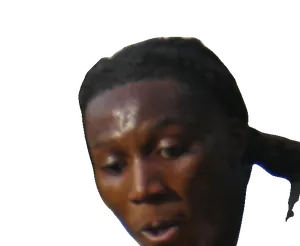
Brooke Norton-CuffyHull CityPhoto : Timmy96
CC0 · source Bruno FernandesMan UnitedPhoto : Bryan Berlin
Bruno FernandesMan UnitedPhoto : Bryan Berlin
CC BY-SA 4.0 · source Bruno GuimarãesArsenalPhoto : Bryan Berlin
Bruno GuimarãesArsenalPhoto : Bryan Berlin
CC BY-SA 4.0 · source Bryan CristanteRomaPhoto : Антон Зайцев
Bryan CristanteRomaPhoto : Антон Зайцев
CC BY-SA 3.0 · source Bryan MbeumoMan UnitedPhoto : ESTAC Troyes
Bryan MbeumoMan UnitedPhoto : ESTAC Troyes
CC BY 3.0 · source Bukayo SakaArsenalPhoto : Bryan Berlin
Bukayo SakaArsenalPhoto : Bryan Berlin
CC BY-SA 4.0 · source Callum Hudson-OdoiNottingham ForestPhoto : Vyacheslav Evdokimov
Callum Hudson-OdoiNottingham ForestPhoto : Vyacheslav Evdokimov
CC BY-SA 3.0 · source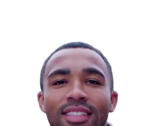
Callum WilsonBrentfordPhoto : AFC Bournemouth
CC BY 3.0 · source Calvin BasseyFulhamPhoto : Carlo Bruil Fotografie
Calvin BasseyFulhamPhoto : Carlo Bruil Fotografie
CC BY 2.0 · source CampbellElversbergPhoto : TankedBevo of ShaggyBevo.com
CampbellElversbergPhoto : TankedBevo of ShaggyBevo.com
CC BY 2.5 · source Carlo PinsoglioJuventusPhoto : Matteo Brama
Carlo PinsoglioJuventusPhoto : Matteo Brama
CC BY-SA 4.0 · source Carlos BalebaMan UnitedPhoto : Timmy96
Carlos BalebaMan UnitedPhoto : Timmy96
CC0 · source CarreraReal SociedadPhoto : Кирилл Венедиктов
CarreraReal SociedadPhoto : Кирилл Венедиктов
CC BY-SA 3.0 · source Cédric KipréIpswichPhoto : Paté kroute
Cédric KipréIpswichPhoto : Paté kroute
CC0 · source Chadi RiadCrystal PalacePhoto : Abdelali Bentarki
Chadi RiadCrystal PalacePhoto : Abdelali Bentarki
CC BY 4.0 · source Charalampos KostoulasBrightonPhoto : Timmy96
Charalampos KostoulasBrightonPhoto : Timmy96
CC0 · source Charles De KetelaereAtalantaPhoto : Bryan Berlin
Charles De KetelaereAtalantaPhoto : Bryan Berlin
CC BY-SA 4.0 · source ChavarríaChelseaPhoto : Supporterhéninois
ChavarríaChelseaPhoto : Supporterhéninois
CC0 · source Ché AdamsTorinoPhoto : Birmingham City F.C.
Ché AdamsTorinoPhoto : Birmingham City F.C.
CC0 · source Cheick DoucouréCrystal PalacePhoto : Supporterhéninois
Cheick DoucouréCrystal PalacePhoto : Supporterhéninois
CC0 · source Chemsdine TalbiSunderlandPhoto : Abdelali Bentarki
Chemsdine TalbiSunderlandPhoto : Abdelali Bentarki
CC BY 4.0 · source Chidera EjukeSévillePhoto : Антон Зайцев
Chidera EjukeSévillePhoto : Антон Зайцев
CC BY-SA 3.0 · source Chris FührichStuttgartPhoto : Jeollo von VfB-exklusiv.de
Chris FührichStuttgartPhoto : Jeollo von VfB-exklusiv.de
CC BY 3.0 · source Chris WoodNottingham ForestPhoto : Кирилл Венедиктов
Chris WoodNottingham ForestPhoto : Кирилл Венедиктов
CC BY-SA 3.0 · source Christian GünterFribourgPhoto : James Steakley
Christian GünterFribourgPhoto : James Steakley
CC BY 4.0 · source Christian KofaneLeverkusenPhoto : Fuguito
Christian KofaneLeverkusenPhoto : Fuguito
CC BY-SA 4.0 · source Christian NørgaardEvertonPhoto : Britta Zimmermann
Christian NørgaardEvertonPhoto : Britta Zimmermann
CC BY-SA 3.0 · source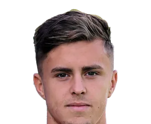
Christoph BaumgartnerLeipzigPhoto : --Steindy (d) 18:47, 13 October 2019 (UTC)
CC BY-SA 4.0 · source Christopher NkunkuLeipzigPhoto : Steffen Prößdorf
Christopher NkunkuLeipzigPhoto : Steffen Prößdorf
CC BY-SA 4.0 · source Christos MandasLazioPhoto : Timmy96
Christos MandasLazioPhoto : Timmy96
CC0 · source Chuba AkpomIpswichPhoto : Carlo Bruil Fotografie
Chuba AkpomIpswichPhoto : Carlo Bruil Fotografie
CC BY 2.0 · source CiervoCagliariPhoto : Antonio Fraioli
CiervoCagliariPhoto : Antonio Fraioli
CC BY-SA 4.0 · source Cody GakpoLiverpoolPhoto : User:Zafer
Cody GakpoLiverpoolPhoto : User:Zafer
CC BY-SA 4.0 · source Cole PalmerChelseaPhoto : The White House
Cole PalmerChelseaPhoto : The White House
Public domain · source CondeBetisPhoto : El Gráfico
CondeBetisPhoto : El Gráfico
Public domain · source Conor BradleyLiverpoolPhoto : Biser Todorov
Conor BradleyLiverpoolPhoto : Biser Todorov
CC BY 4.0 · source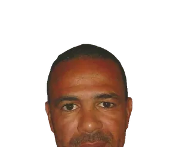
CostinhaBrightonPhoto : Christophe95
CC BY-SA 3.0 · source Couhaib DriouechCeltaPhoto : Hans Reefman
Couhaib DriouechCeltaPhoto : Hans Reefman
CC BY-SA 4.0 · source Cristhian MosqueraArsenalPhoto : Chensiyuan
Cristhian MosqueraArsenalPhoto : Chensiyuan
CC BY-SA 4.0 · source Cristian RomeroAtléticoPhoto : Bryan Berlin
Cristian RomeroAtléticoPhoto : Bryan Berlin
CC BY-SA 4.0 · source Cristian VolpatoSassuoloPhoto : Bryan Berlin
Cristian VolpatoSassuoloPhoto : Bryan Berlin
CC BY-SA 4.0 · source Cristiano BiraghiTorinoPhoto : Marzlee7
Cristiano BiraghiTorinoPhoto : Marzlee7
CC BY-SA 4.0 · source Cucho HernándezBetisPhoto : Fotografía oficial de la Presidencia de Colombia
Cucho HernándezBetisPhoto : Fotografía oficial de la Presidencia de Colombia
Public domain · source Curtis JonesInterPhoto : User:Stepro
Curtis JonesInterPhoto : User:Stepro
CC BY-SA 4.0 · source Daichi KamadaCrystal PalacePhoto : Sven Mandel
Daichi KamadaCrystal PalacePhoto : Sven Mandel
CC BY-SA 4.0 · source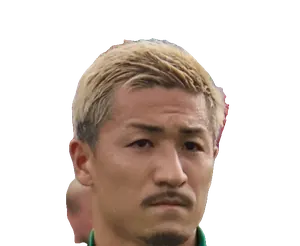
Daizen MaedaIpswichPhoto : Hameltion
CC BY-SA 4.0 · source Dan-Axel ZagadouStuttgartPhoto : Jeollo von VfB-exklusiv.de
Dan-Axel ZagadouStuttgartPhoto : Jeollo von VfB-exklusiv.de
CC BY 4.0 · source Dan BurnNewcastlePhoto : Bryan Berlin
Dan BurnNewcastlePhoto : Bryan Berlin
CC BY-SA 4.0 · source Dan NdoyeNottingham ForestPhoto : Supporterhéninois
Dan NdoyeNottingham ForestPhoto : Supporterhéninois
CC0 · source Dango OuattaraBrentfordPhoto : AFC Bournemouth
Dango OuattaraBrentfordPhoto : AFC Bournemouth
CC BY 3.0 · source Dani BarciaLa CorognePhoto : Estevoaei
Dani BarciaLa CorognePhoto : Estevoaei
CC BY-SA 4.0 · source Dani CarvajalGetafePhoto : Rolandhino1
Dani CarvajalGetafePhoto : Rolandhino1
CC BY-SA 4.0 · source Dani CeballosBetisPhoto : Fotografías Archimadrid.es
Dani CeballosBetisPhoto : Fotografías Archimadrid.es
CC BY 2.0 · source Dani OlmoBarcelonePhoto : Bryan Berlin
Dani OlmoBarcelonePhoto : Bryan Berlin
CC BY-SA 4.0 · source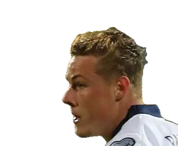
Daniel BallardSunderlandPhoto : Biser Todorov
CC BY 4.0 · source Daniel BolocaSassuoloPhoto : Antonio Fraioli
Daniel BolocaSassuoloPhoto : Antonio Fraioli
CC BY-SA 4.0 · source Daniel BragançaTorinoPhoto : Sporting Clube de Portugal
Daniel BragançaTorinoPhoto : Sporting Clube de Portugal
CC BY 3.0 · source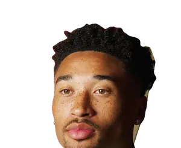
Daniel JebbisonBournemouthPhoto : AFC Bournemouth
CC BY 3.0 · source Daniel SvenssonDortmundPhoto : Mikael Hervestad
Daniel SvenssonDortmundPhoto : Mikael Hervestad
CC BY-SA 4.0 · source Daniele GhilardiRomaPhoto : LittleWhites
Daniele GhilardiRomaPhoto : LittleWhites
CC BY-SA 4.0 · source Daniele RuganiJuventusPhoto : MichaelEmilio
Daniele RuganiJuventusPhoto : MichaelEmilio
CC BY 4.0 · source Danilo D'AmbrosioMonzaPhoto : Илья Хохлов
Danilo D'AmbrosioMonzaPhoto : Илья Хохлов
CC BY-SA 3.0 · source Danny da CostaMayencePhoto : Silesia711
Danny da CostaMayencePhoto : Silesia711
CC BY-SA 4.0 · source Danny WelbeckChelseaPhoto : jamesboyes
Danny WelbeckChelseaPhoto : jamesboyes
CC BY 2.0 · source Dany MotaMonzaPhoto : Nehme1499
Dany MotaMonzaPhoto : Nehme1499
CC BY-SA 4.0 · source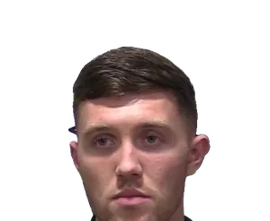
Dara O'SheaIpswichPhoto : Irish Football Fan TV
CC BY 3.0 · source Darío OsorioCrystal PalacePhoto : Carlos yo
Darío OsorioCrystal PalacePhoto : Carlos yo
CC BY-SA 4.0 · source Darnell FurlongIpswichPhoto : Jrppezza
Darnell FurlongIpswichPhoto : Jrppezza
CC BY-SA 4.0 · source David AffengruberFulhamPhoto : Werner100359
David AffengruberFulhamPhoto : Werner100359
CC BY-SA 4.0 · source David AlabaUdinesePhoto : Rufus46
David AlabaUdinesePhoto : Rufus46
CC BY-SA 3.0 · source David BrooksBournemouthPhoto : AFC Bournemouth
David BrooksBournemouthPhoto : AFC Bournemouth
CC BY 3.0 · source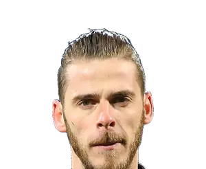
David de GeaFiorentinaPhoto : Кирилл Венедиктов
CC BY-SA 3.0 · source David MellaLa CorognePhoto : Estevoaei
David MellaLa CorognePhoto : Estevoaei
CC BY-SA 4.0 · source David NeresNaplesPhoto : Sport Lisboa e Benfica
David NeresNaplesPhoto : Sport Lisboa e Benfica
CC BY 3.0 · source David RaumLeipzigPhoto : Bryan Berlin
David RaumLeipzigPhoto : Bryan Berlin
CC BY-SA 4.0 · source David RayaArsenalPhoto : Bryan Berlin
David RayaArsenalPhoto : Bryan Berlin
CC BY-SA 4.0 · source Davide FrattesiLazioPhoto : Werner100359
Davide FrattesiLazioPhoto : Werner100359
CC BY-SA 4.0 · source Dayot UpamecanoBayernPhoto : Bryan Berlin
Dayot UpamecanoBayernPhoto : Bryan Berlin
CC BY-SA 4.0 · source Dean HendersonCrystal PalacePhoto : Bryan Berlin
Dean HendersonCrystal PalacePhoto : Bryan Berlin
CC BY-SA 4.0 · source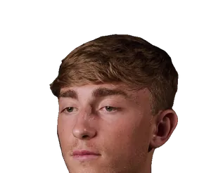
Dean HuijsenReal MadridPhoto : AFC Bournemouth
CC BY 3.0 · source Declan RiceArsenalPhoto : Bryan Berlin
Declan RiceArsenalPhoto : Bryan Berlin
CC BY-SA 4.0 · source Dejan KulusevskiTottenhamPhoto : Original : Rolandhino1 / Travail dérivé : Danyele
Dejan KulusevskiTottenhamPhoto : Original : Rolandhino1 / Travail dérivé : Danyele
CC BY-SA 4.0 · source Demba ThiamMonzaPhoto : Supporterhéninois
Demba ThiamMonzaPhoto : Supporterhéninois
CC0 · source Denis SuárezAlavésPhoto : Giovanni Batista Rodriguez from San Sebastian-Donostia, España
Denis SuárezAlavésPhoto : Giovanni Batista Rodriguez from San Sebastian-Donostia, España
CC BY-SA 2.0 · source Deniz UndavStuttgartPhoto : Jeollo von VfB-exklusiv.de
Deniz UndavStuttgartPhoto : Jeollo von VfB-exklusiv.de
CC BY-SA 4.0 · source Dennis SeimenStuttgartPhoto : FriederRöcklerII
Dennis SeimenStuttgartPhoto : FriederRöcklerII
CC0 · source Désiré DouéPSGPhoto : Bryan Berlin
Désiré DouéPSGPhoto : Bryan Berlin
CC BY-SA 4.0 · source Destiny UdogieTottenhamPhoto : MichaelEmilio
Destiny UdogieTottenhamPhoto : MichaelEmilio
CC BY 4.0 · source Devyne RenschRomaPhoto : Voice of America (Aziz Karimov)
Devyne RenschRomaPhoto : Voice of America (Aziz Karimov)
Public domain · source Diego CarlosParmePhoto : Дмитрий Пукалик
Diego CarlosParmePhoto : Дмитрий Пукалик
CC BY-SA 3.0 · source Diego GómezBrightonPhoto : Alex-ch49
Diego GómezBrightonPhoto : Alex-ch49
CC BY-SA 3.0 · source Diego LlorenteBetisPhoto : Giovanni Batista Rodriguez from San Sebastian-Donostia, España
Diego LlorenteBetisPhoto : Giovanni Batista Rodriguez from San Sebastian-Donostia, España
CC BY-SA 2.0 · source Diego MoreiraMilanPhoto : Paté kroute
Diego MoreiraMilanPhoto : Paté kroute
CC0 · source Diego RicoOsasunaPhoto : AFC Bournemouth
Diego RicoOsasunaPhoto : AFC Bournemouth
CC BY 3.0 · source Diego VillaresLa CorognePhoto : Estevoaei
Diego VillaresLa CorognePhoto : Estevoaei
CC BY-SA 4.0 · source DiengValencePhoto : Bryan Berlin
DiengValencePhoto : Bryan Berlin
CC BY-SA 4.0 · source Diogo DalotMan UnitedPhoto : Bryan Berlin
Diogo DalotMan UnitedPhoto : Bryan Berlin
CC BY-SA 4.0 · source Djed SpenceInterPhoto : Bryan Berlin
Djed SpenceInterPhoto : Bryan Berlin
CC BY-SA 4.0 · source Djibril SowGenoaPhoto : Silesia711
Djibril SowGenoaPhoto : Silesia711
CC BY-SA 4.0 · source Domenico BerardiSassuoloPhoto : Palazzo Chigi
Domenico BerardiSassuoloPhoto : Palazzo Chigi
CC BY 3.0 · source Dominic Calvert-LewinLeedsPhoto : @cfcunofficial (Chelsea Debs) London
Dominic Calvert-LewinLeedsPhoto : @cfcunofficial (Chelsea Debs) London
CC BY-SA 2.0 · source Dominic SolankeTottenhamPhoto : AFC Bournemouth
Dominic SolankeTottenhamPhoto : AFC Bournemouth
CC BY 3.0 · source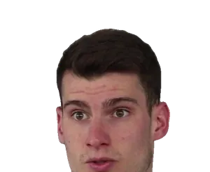
Dominik LivakovićBarcelonePhoto : PIXSELL
CC BY 3.0 · source Dominik SzoboszlaiLiverpoolPhoto : Timmy96
Dominik SzoboszlaiLiverpoolPhoto : Timmy96
CC0 · source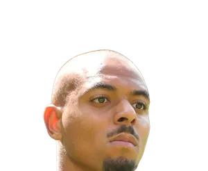
Donyell MalenRomaPhoto : Sandro Halank, Wikimedia Commons
CC BY-SA 4.0 · source Douglas LuizJuventusPhoto : MintyGel
Douglas LuizJuventusPhoto : MintyGel
CC0 · source Duje Ćaleta-CarSassuoloPhoto : Paté kroute
Duje Ćaleta-CarSassuoloPhoto : Paté kroute
CC0 · source Dwight McNeilCrystal PalacePhoto : Kelvin Stuttard
Dwight McNeilCrystal PalacePhoto : Kelvin Stuttard
CC BY-SA 4.0 · source Eberechi EzeArsenalPhoto : Bryan Berlin
Eberechi EzeArsenalPhoto : Bryan Berlin
CC BY-SA 4.0 · source EchegoyenOsasunaPhoto : Daeri
EchegoyenOsasunaPhoto : Daeri
CC0 · source Eddie NketiahCrystal PalacePhoto : Chensiyuan
Eddie NketiahCrystal PalacePhoto : Chensiyuan
CC BY-SA 4.0 · source Éder MilitãoReal MadridPhoto : Real Madrid
Éder MilitãoReal MadridPhoto : Real Madrid
CC BY 3.0 · source ÉdersonAtalantaPhoto : YantsImages
ÉdersonAtalantaPhoto : YantsImages
CC BY-SA 4.0 · source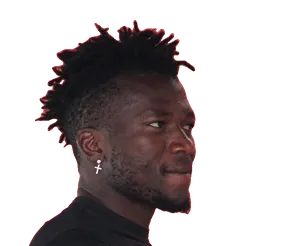
Edmond TapsobaLeverkusenPhoto : Pyaet
CC BY-SA 4.0 · source Edon ZhegrovaJuventusPhoto : Paté kroute
Edon ZhegrovaJuventusPhoto : Paté kroute
CC0 · source Eli Junior KroupiBournemouthPhoto : Timmy96
Eli Junior KroupiBournemouthPhoto : Timmy96
CC BY-SA 4.0 · source Eliesse Ben SeghirLeverkusenPhoto : Laloumance
Eliesse Ben SeghirLeverkusenPhoto : Laloumance
CC BY 4.0 · source Eljif ElmasAtalantaPhoto : Антон Зайцев
Eljif ElmasAtalantaPhoto : Антон Зайцев
CC BY-SA 3.0 · source Elliot AndersonMan CityPhoto : Bryan Berlin
Elliot AndersonMan CityPhoto : Bryan Berlin
CC BY-SA 4.0 · source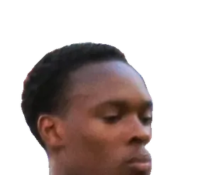
Emanuel EmeghaChelseaPhoto : Werner100359
CC BY-SA 4.0 · source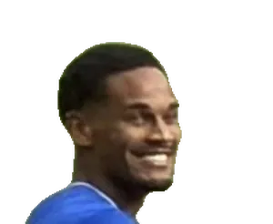
EmersonnIpswichPhoto : COYB123
CC BY 4.0 · source Emil AuderoRayo VallecanoPhoto : BPMI Sekretariat Presiden/Muchlis Jr
Emil AuderoRayo VallecanoPhoto : BPMI Sekretariat Presiden/Muchlis Jr
Public domain · source Emil HolmBolognePhoto : Amanda Aikioniemi
Emil HolmBolognePhoto : Amanda Aikioniemi
Public domain · source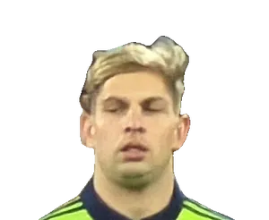
Emile Smith RoweFulhamPhoto : Quintin Soloviev
CC BY 4.0 · source Emiliano MartínezChelseaPhoto : Bryan Berlin
Emiliano MartínezChelseaPhoto : Bryan Berlin
CC BY-SA 4.0 · source Emirhan İlkhanTorinoPhoto : Antalyaspor A.Ş.
Emirhan İlkhanTorinoPhoto : Antalyaspor A.Ş.
CC BY 2.0 · source Emre CanDortmundPhoto : Sandro Halank, Wikimedia Commons
Emre CanDortmundPhoto : Sandro Halank, Wikimedia Commons
CC BY-SA 4.0 · source EndrickReal MadridPhoto : YantsImages
EndrickReal MadridPhoto : YantsImages
CC BY-SA 4.0 · source- Enes ÜnalGetafePhoto : Auteur inconnu
CC BY-SA 4.0 · source  EngelhardtFribourgPhoto : Euku:⇄
EngelhardtFribourgPhoto : Euku:⇄
CC BY-SA 3.0 · source Enzo EbosseUdinesePhoto : Supporterhéninois
Enzo EbosseUdinesePhoto : Supporterhéninois
CC0 · source Enzo FernándezMan CityPhoto : Bryan Berlin
Enzo FernándezMan CityPhoto : Bryan Berlin
CC BY-SA 4.0 · source Enzo Le FéeSunderlandPhoto : Supporterhéninois
Enzo Le FéeSunderlandPhoto : Supporterhéninois
CC0 · source Enzo TchatoFrosinonePhoto : Paté kroute
Enzo TchatoFrosinonePhoto : Paté kroute
CC0 · source Eray CömertTorinoPhoto : Дмитрий Пукалик
Eray CömertTorinoPhoto : Дмитрий Пукалик
CC BY-SA 3.0 · source Eren DinkçiWerder BrêmePhoto : Silesia711
Eren DinkçiWerder BrêmePhoto : Silesia711
CC BY-SA 4.0 · source Eric MartelMayencePhoto : Werner100359
Eric MartelMayencePhoto : Werner100359
CC0 · source EstêvãoChelseaPhoto : NullReason
EstêvãoChelseaPhoto : NullReason
CC BY-SA 4.0 · source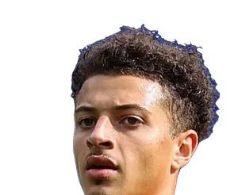
Ethan AmpaduLeedsPhoto : Nickb1792
CC BY-SA 4.0 · source Ethan NwaneriDortmundPhoto : WorldWide1z
Ethan NwaneriDortmundPhoto : WorldWide1z
CC BY 3.0 · source Evann GuessandCrystal PalacePhoto : Paté kroute
Evann GuessandCrystal PalacePhoto : Paté kroute
CC0 · source Ezequiel PonceElchePhoto : Анна Нэсси
Ezequiel PonceElchePhoto : Анна Нэсси
CC BY-SA 3.0 · source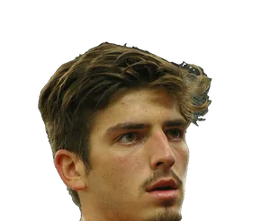
Fabian BredlowStuttgartPhoto : Werner100359
CC BY-SA 4.0 · source Fabián RuizPSGPhoto : Bryan Berlin
Fabián RuizPSGPhoto : Bryan Berlin
CC BY-SA 4.0 · source Fábio SilvaDortmundPhoto : Bex Walton
Fábio SilvaDortmundPhoto : Bex Walton
CC BY 2.0 · source Facundo MedinaLeverkusenPhoto : Bryan Berlin
Facundo MedinaLeverkusenPhoto : Bryan Berlin
CC BY-SA 4.0 · source Fali CandéSassuoloPhoto : Anneprudence
Fali CandéSassuoloPhoto : Anneprudence
CC BY 4.0 · source Farès ChaïbiFrancfortPhoto : feguifoot
Farès ChaïbiFrancfortPhoto : feguifoot
Public domain · source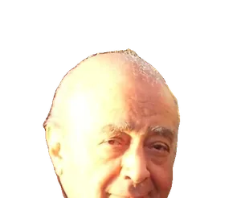
FayedFrosinonePhoto : Abi Skipp
CC BY 2.0 · source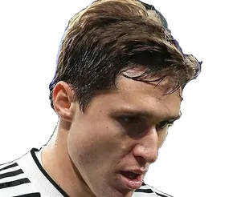
Federico ChiesaLiverpoolPhoto : Kirill Venediktov
CC BY-SA 3.0 · source Federico GattiJuventusPhoto : Mario Salati
Federico GattiJuventusPhoto : Mario Salati
CC BY-SA 4.0 · source Federico RedondoElchePhoto : BugWarp
Federico RedondoElchePhoto : BugWarp
CC BY-SA 4.0 · source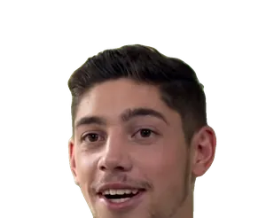
Federico ValverdeReal MadridPhoto : Real Madrid
CC BY 3.0 · source Felix AguWerder BrêmePhoto : Silesia711
Felix AguWerder BrêmePhoto : Silesia711
CC BY-SA 4.0 · source Felix NmechaDortmundPhoto : Bryan Berlin
Felix NmechaDortmundPhoto : Bryan Berlin
CC BY-SA 4.0 · source Ferdi KadıoğluBrightonPhoto : beIN SPORTS Türkiye
Ferdi KadıoğluBrightonPhoto : beIN SPORTS Türkiye
CC BY 3.0 · source Fermín LópezBarcelonePhoto : Biso
Fermín LópezBarcelonePhoto : Biso
CC BY 4.0 · source Ferran JutglàCeltaPhoto : Marc Santaeugenia Ribas from Barcelona
Ferran JutglàCeltaPhoto : Marc Santaeugenia Ribas from Barcelona
CC BY-SA 2.0 · source Ferran TorresPSGPhoto : Bryan Berlin
Ferran TorresPSGPhoto : Bryan Berlin
CC BY-SA 4.0 · source Fikayo TomoriMilanPhoto : Werner100359
Fikayo TomoriMilanPhoto : Werner100359
CC BY-SA 4.0 · source Filip StankovićVenisePhoto : Carlo Bruil Fotografie
Filip StankovićVenisePhoto : Carlo Bruil Fotografie
CC BY 2.0 · source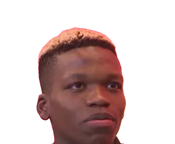
Florentino LuísIpswichPhoto : Sport Lisboa e Benfica
CC BY 3.0 · source Florian GrillitschFrosinonePhoto : Ailura, Derivative work by Bayernfan2003
Florian GrillitschFrosinonePhoto : Ailura, Derivative work by Bayernfan2003
CC BY-SA 3.0 at · source Florian MüllerFribourgPhoto : Jeollo
Florian MüllerFribourgPhoto : Jeollo
CC BY 3.0 · source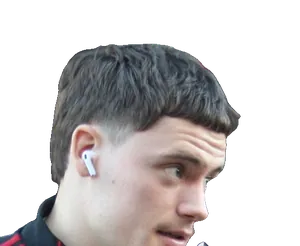
Florian WirtzLiverpoolPhoto : Timmy96
CC0 · source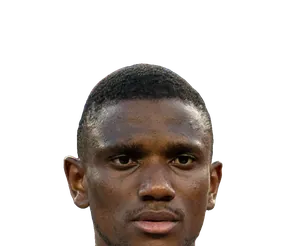
FofanaSévillePhoto : Bryan Berlin
CC BY-SA 4.0 · source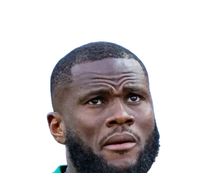
Franck KessiéAtalantaPhoto : Bryan Berlin
CC BY-SA 4.0 · source Frank AnguissaNaplesPhoto : Happiraphael
Frank AnguissaNaplesPhoto : Happiraphael
CC BY-SA 4.0 · source Fraser ForsterBournemouthPhoto : Memorino
Fraser ForsterBournemouthPhoto : Memorino
CC BY-SA 3.0 · source Frenkie de JongBarcelonePhoto : Yuliia Perekopaiko
Frenkie de JongBarcelonePhoto : Yuliia Perekopaiko
CC BY-SA 4.0 · source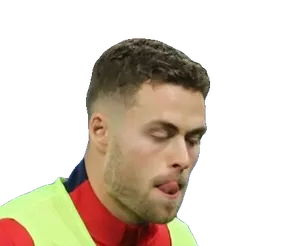
Gabriel GudmundssonLeedsPhoto : Paté kroute
CC0 · source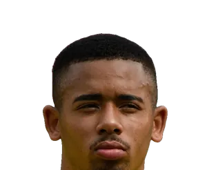
Gabriel JesusBarcelonePhoto : Granada
CC BY-SA 4.0 · source Gabriel MagalhãesArsenalPhoto : Bryan Berlin
Gabriel MagalhãesArsenalPhoto : Bryan Berlin
CC BY-SA 4.0 · source Gabriel MoscardoEspanyolPhoto : Paté kroute
Gabriel MoscardoEspanyolPhoto : Paté kroute
CC0 · source Gabriel SuazoSévillePhoto : Carlos Figueroa
Gabriel SuazoSévillePhoto : Carlos Figueroa
CC BY-SA 4.0 · source GaviBarcelonePhoto : Bryan Berlin
GaviBarcelonePhoto : Bryan Berlin
CC BY-SA 4.0 · source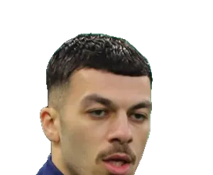
Georges MikautadzeVillarrealPhoto : Paté kroute
CC0 · source Gerard MorenoVillarrealPhoto : Rolandhino1
Gerard MorenoVillarrealPhoto : Rolandhino1
CC BY-SA 4.0 · source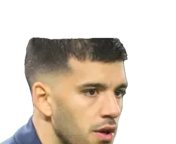
Gerónimo RulliMan CityPhoto : Paté kroute
CC0 · source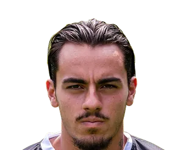
Giacomo QuagliataLa CorognePhoto : Frank Oortwijn
CC BY-SA 4.0 · source Giacomo RaspadoriAtalantaPhoto : Aramis974
Giacomo RaspadoriAtalantaPhoto : Aramis974
CC BY-SA 4.0 · source Gianluca BusioVenisePhoto : Jamie Smed
Gianluca BusioVenisePhoto : Jamie Smed
CC BY 2.0 · source Gianluca GaetanoAtalantaPhoto : LorMo1991
Gianluca GaetanoAtalantaPhoto : LorMo1991
CC BY-SA 4.0 · source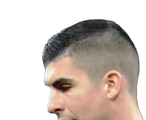
Gianluca ManciniRomaPhoto : Werner100359
CC BY-SA 4.0 · source Gianluca ScamaccaAtalantaPhoto : Original : Egghead06 Travail dérivé : Dr Salvus
Gianluca ScamaccaAtalantaPhoto : Original : Egghead06 Travail dérivé : Dr Salvus
CC BY-SA 4.0 · source Gianluigi DonnarummaMan CityPhoto : Paté kroute
Gianluigi DonnarummaMan CityPhoto : Paté kroute
CC0 · source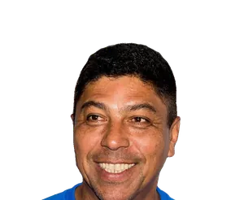
GiovaneNaplesPhoto : Sven Mandel
CC BY-SA 4.0 · source Giovani Lo CelsoBetisPhoto : Bryan Berlin
Giovani Lo CelsoBetisPhoto : Bryan Berlin
CC BY-SA 4.0 · source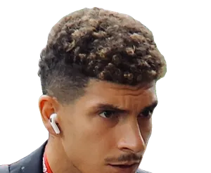
Giovanni Di LorenzoNaplesPhoto : MichaelEmilio
CC BY 4.0 · source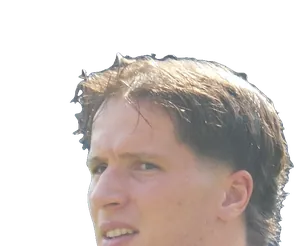
Giovanni FabbianParmePhoto : Timmy96
CC0 · source Giuliano SimeoneAtléticoPhoto : Bryan Berlin
Giuliano SimeoneAtléticoPhoto : Bryan Berlin
CC BY-SA 4.0 · source Gonçalo GuedesReal SociedadPhoto : Bryan Berlin
Gonçalo GuedesReal SociedadPhoto : Bryan Berlin
CC BY-SA 4.0 · source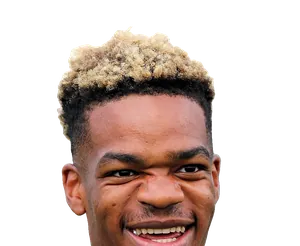
Grady DianganaElchePhoto : --Steindy (d) 16:18, 29 August 2019 (UTC)
CC BY-SA 4.0 · source Gregor KobelDortmundPhoto : Sandro Halank, Wikimedia Commons
Gregor KobelDortmundPhoto : Sandro Halank, Wikimedia Commons
CC BY-SA 4.0 · source Grischa PrömelStuttgartPhoto : Fernando Frazão/Agência Brasil
Grischa PrömelStuttgartPhoto : Fernando Frazão/Agência Brasil
CC BY 3.0 br · source GudeljGetafePhoto : Richard Mulder
GudeljGetafePhoto : Richard Mulder
CC BY-SA 3.0 · source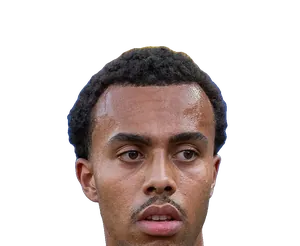
Guéla DouéLeverkusenPhoto : Bryan Berlin
CC BY-SA 4.0 · source Gustavo HamerCoventryPhoto : Klaas Hamer
Gustavo HamerCoventryPhoto : Klaas Hamer
CC BY-SA 4.0 · source Gvidas GineitisTorinoPhoto : Supporterhéninois
Gvidas GineitisTorinoPhoto : Supporterhéninois
CC0 · source Haji WrightCoventryPhoto : Bryan Berlin
Haji WrightCoventryPhoto : Bryan Berlin
CC BY-SA 4.0 · source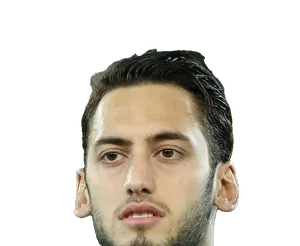
Hakan ÇalhanoğluInterPhoto : Steindy (d) 10:15, 11 April 2016 (UTC)
CC BY-SA 3.0 · source Hamed TraorèGenoaPhoto : AFC Bournemouth
Hamed TraorèGenoaPhoto : AFC Bournemouth
CC BY 3.0 · source Han-Noah MassengoAugsbourgPhoto : Paté kroute
Han-Noah MassengoAugsbourgPhoto : Paté kroute
CC0 · source Harrison ReedFulhamPhoto : Timmy96
Harrison ReedFulhamPhoto : Timmy96
CC0 · source Harry KaneBayernPhoto : Bryan Berlin
Harry KaneBayernPhoto : Bryan Berlin
CC BY-SA 4.0 · source Harry MaguireMan UnitedPhoto : UK Prime Minister
Harry MaguireMan UnitedPhoto : UK Prime Minister
CC BY 2.0 · source Harry WinksCagliariPhoto : S. Plaine
Harry WinksCagliariPhoto : S. Plaine
CC BY-SA 4.0 · source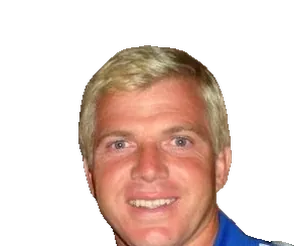
HartmanEspanyolPhoto : Mahanga
CC BY 3.0 · source Harvey ElliottValencePhoto : Steffen Prößdorf
Harvey ElliottValencePhoto : Steffen Prößdorf
CC BY-SA 4.0 · source Hassane KamaraUdinesePhoto : Supporterhéninois
Hassane KamaraUdinesePhoto : Supporterhéninois
CC0 · source Hayden HackneyEvertonPhoto : Timmy96
Hayden HackneyEvertonPhoto : Timmy96
CC0 · source Héctor BellerínBetisPhoto : Chensiyuan
Héctor BellerínBetisPhoto : Chensiyuan
CC BY-SA 4.0 · source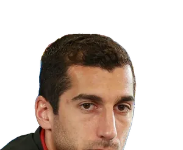
Henrikh MkhitaryanInterPhoto : Дмитрий Голубович
CC BY-SA 3.0 · source Hiroki ItoBayernPhoto : Jeollo von VfB-exklusiv.de
Hiroki ItoBayernPhoto : Jeollo von VfB-exklusiv.de
CC BY 3.0 · source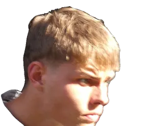
Hjertø-DahlHull CityPhoto : Timmy96
CC0 · source Hugo EkitikeLiverpoolPhoto : Liondartois
Hugo EkitikeLiverpoolPhoto : Liondartois
CC BY-SA 4.0 · source Hugo LarssonFulhamPhoto : Reportagefotografen
Hugo LarssonFulhamPhoto : Reportagefotografen
CC BY-SA 4.0 · source Iago AspasCeltaPhoto : Harpagornis
Iago AspasCeltaPhoto : Harpagornis
CC BY-SA 4.0 · source Ibrahim MazaLeverkusenPhoto : Shawarmael7alouin
Ibrahim MazaLeverkusenPhoto : Shawarmael7alouin
CC0 · source Ibrahim SangaréNottingham ForestPhoto : Bryan Berlin
Ibrahim SangaréNottingham ForestPhoto : Bryan Berlin
CC BY-SA 4.0 · source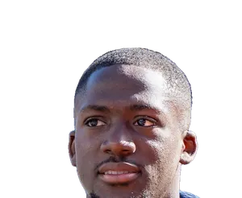
Ibrahima KonatéReal MadridPhoto : Bryan Berlin
CC BY-SA 4.0 · source Ignace Van der BremptSassuoloPhoto : Werner100359
Ignace Van der BremptSassuoloPhoto : Werner100359
CC BY-SA 4.0 · source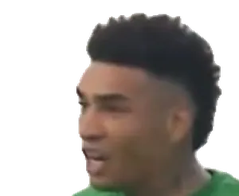
Igor JesusNottingham ForestPhoto : AD Sports
CC BY-SA 3.0 · source Igor ZubeldiaReal SociedadPhoto : Giovanni Batista Rodriguez from San Sebastian-Donostia, España
Igor ZubeldiaReal SociedadPhoto : Giovanni Batista Rodriguez from San Sebastian-Donostia, España
CC BY-SA 2.0 · source Ilaix MoribaCeltaPhoto : Mamadou Saliou Barry - Fédération Guinéenne de Football
Ilaix MoribaCeltaPhoto : Mamadou Saliou Barry - Fédération Guinéenne de Football
Public domain · source Ilario MonterisiFrosinonePhoto : Antonio Fraioli
Ilario MonterisiFrosinonePhoto : Antonio Fraioli
CC BY-SA 4.0 · source Ilias AkhomachVillarrealPhoto : Photographe : Abdelali Bentarki (Ali Graphy Pic) ; recadrage : A.Nawf…
Ilias AkhomachVillarrealPhoto : Photographe : Abdelali Bentarki (Ali Graphy Pic) ; recadrage : A.Nawf…
CC BY 4.0 · source IlićLeccePhoto : Vux33
IlićLeccePhoto : Vux33
CC BY-SA 4.0 · source Iliman NdiayeMan CityPhoto : Bryan Berlin
Iliman NdiayeMan CityPhoto : Bryan Berlin
CC BY-SA 4.0 · source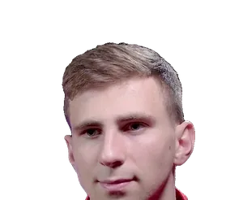
Illia ZabarnyiPSGPhoto : AFC Bournemouth
CC BY 3.0 · source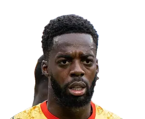
Iñaki WilliamsAthletic ClubPhoto : Bryan Berlin
CC BY-SA 4.0 · source Iñigo Ruiz de GalarretaAthletic ClubPhoto : Cristina Cifuentes
Iñigo Ruiz de GalarretaAthletic ClubPhoto : Cristina Cifuentes
CC BY 2.0 · source- Ionuț RaduCeltaPhoto : AFC Bournemouth
CC BY 3.0 · source  Isak HienAtalantaPhoto : Rolandhino1
Isak HienAtalantaPhoto : Rolandhino1
CC BY-SA 4.0 · source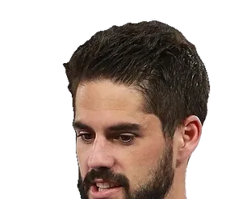
IscoBetisPhoto : Антон Зайцев
CC BY-SA 3.0 · source- Ismaël KonéSassuoloPhoto : Bryan Berlin
CC BY-SA 4.0 · source  Ismaïla SarrCrystal PalacePhoto : Bryan Berlin
Ismaïla SarrCrystal PalacePhoto : Bryan Berlin
CC BY-SA 4.0 · source Iván BalliuRayo VallecanoPhoto : Supporterhéninois
Iván BalliuRayo VallecanoPhoto : Supporterhéninois
CC0 · source- Iván VillarCeltaPhoto : Estevoaei
CC BY-SA 4.0 · source  Jørgen Strand LarsenCrystal PalacePhoto : Bryan Berlin
Jørgen Strand LarsenCrystal PalacePhoto : Bryan Berlin
CC BY-SA 4.0 · source Jack ClarkeIpswichPhoto : COYB123
Jack ClarkeIpswichPhoto : COYB123
CC0 · source Jack GrealishEvertonPhoto : Steffen Prößdorf
Jack GrealishEvertonPhoto : Steffen Prößdorf
CC BY-SA 4.0 · source Jack HinshelwoodBrightonPhoto : Timmy96
Jack HinshelwoodBrightonPhoto : Timmy96
CC0 · source- Jack RudoniCoventryPhoto : MilesaMFC
CC0 · source  Jack TaylorIpswichPhoto : Hans Peters pour Anefo
Jack TaylorIpswichPhoto : Hans Peters pour Anefo
CC0 · source Jacob MurphyNewcastlePhoto : @cfcunofficial (Chelsea Debs) London from London, UK
Jacob MurphyNewcastlePhoto : @cfcunofficial (Chelsea Debs) London from London, UK
CC BY-SA 2.0 · source Jair CunhaNottingham ForestPhoto : Fernando Bortolo
Jair CunhaNottingham ForestPhoto : Fernando Bortolo
CC0 · source Jaka BijolLeedsPhoto : Елена Рыбакова
Jaka BijolLeedsPhoto : Елена Рыбакова
CC BY-SA 3.0 · source Jake BidwellCoventryPhoto : Jrppezza
Jake BidwellCoventryPhoto : Jrppezza
CC BY-SA 4.0 · source- Jake O'BrienEvertonPhoto : Irish Football Fan TV
CC BY 3.0 · source  Jakub PiotrowskiUdinesePhoto : Biser Todorov
Jakub PiotrowskiUdinesePhoto : Biser Todorov
CC BY-SA 4.0 · source- Jamal MusialaBayernPhoto : crop by ArsenalGhanaPartey
CC BY-SA 4.0 · source  James AbankwahUdinesePhoto : Udinese Calcio
James AbankwahUdinesePhoto : Udinese Calcio
CC0 · source James GarnerEvertonPhoto : Kane Brooker
James GarnerEvertonPhoto : Kane Brooker
CC BY 2.0 · source- James HillBournemouthPhoto : AFC Bournemouth
CC BY 3.0 · source - James McAteeNottingham ForestPhoto : Hameltion
CC BY-SA 4.0 · source  James TarkowskiEvertonPhoto : Jon Harris/Press Association
James TarkowskiEvertonPhoto : Jon Harris/Press Association
CC BY-SA 4.0 · source- James TraffordLeedsPhoto : Bryan Berlin
CC BY-SA 4.0 · source  Jamie LewelingStuttgartPhoto : Jeollo von VfB-exklusiv.de
Jamie LewelingStuttgartPhoto : Jeollo von VfB-exklusiv.de
CC BY-SA 4.0 · source Jan OblakAtléticoPhoto : Анна Нэсси
Jan OblakAtléticoPhoto : Анна Нэсси
CC BY-SA 3.0 · source Jan Paul van HeckeTottenhamPhoto : Timmy96
Jan Paul van HeckeTottenhamPhoto : Timmy96
CC0 · source Janis BlaswichLeverkusenPhoto : Steffen Prößdorf
Janis BlaswichLeverkusenPhoto : Steffen Prößdorf
CC BY-SA 4.0 · source Jaouen HadjamBrightonPhoto : Supporterhéninois
Jaouen HadjamBrightonPhoto : Supporterhéninois
CC0 · source Jay DasilvaCoventryPhoto : @cfcunofficial (Chelsea Debs) London
Jay DasilvaCoventryPhoto : @cfcunofficial (Chelsea Debs) London
CC BY-SA 2.0 · source Jay IdzesSassuoloPhoto : Carlo Bruil Fotografie
Jay IdzesSassuoloPhoto : Carlo Bruil Fotografie
CC BY 2.0 · source Jaydee CanvotCrystal PalacePhoto : Paté kroute
Jaydee CanvotCrystal PalacePhoto : Paté kroute
CC0 · source- Jayden BogleLeedsPhoto : Timmy96
CC0 · source  Jean ButezCômePhoto : Supporterhéninois
Jean ButezCômePhoto : Supporterhéninois
CC0 · source Jean-Philippe MatetaCrystal PalacePhoto : Bryan Berlin
Jean-Philippe MatetaCrystal PalacePhoto : Bryan Berlin
CC BY-SA 4.0 · source Jeanuël BelocianRacing SantanderPhoto : Supporterhéninois
Jeanuël BelocianRacing SantanderPhoto : Supporterhéninois
CC0 · source- Jefferson LermaCrystal PalacePhoto : AFC Bournemouth
CC BY 3.0 · source  Jeremie FrimpongLiverpoolPhoto : Timmy96
Jeremie FrimpongLiverpoolPhoto : Timmy96
CC0 · source- Jérémy DokuMan CityPhoto : Bryan Berlin
CC BY-SA 4.0 · source - Jeremy ToljanLevantePhoto : Ailura
CC BY-SA 3.0 at · source  Jesper KarlströmUdinesePhoto : Jens Backeman
Jesper KarlströmUdinesePhoto : Jens Backeman
CC BY-SA 4.0 · source Jessic NgankamFrancfortPhoto : Biso
Jessic NgankamFrancfortPhoto : Biso
CC BY 4.0 · source- Jesús VázquezValencePhoto : Valencia CF
CC BY 3.0 · source  Joan GarcíaBarcelonePhoto : Bryan Berlin
Joan GarcíaBarcelonePhoto : Bryan Berlin
CC BY-SA 4.0 · source Joane GadouDortmundPhoto : Werner100359
Joane GadouDortmundPhoto : Werner100359
CC BY-SA 4.0 · source João CanceloBarcelonePhoto : Bryan Berlin
João CanceloBarcelonePhoto : Bryan Berlin
CC BY-SA 4.0 · source João NevesPSGPhoto : Bryan Berlin
João NevesPSGPhoto : Bryan Berlin
CC BY-SA 4.0 · source- Jobe BellinghamDortmundPhoto : Struway2
CC BY-SA 4.0 · source - Joe GomezLiverpoolPhoto : Eric The Fish from UK
CC BY 2.0 · source  Joe WillockNewcastlePhoto : Chensiyuan
Joe WillockNewcastlePhoto : Chensiyuan
CC BY-SA 4.0 · source- Joel LatibeaudiereCoventryPhoto : MilesaMFC
CC0 · source  JoelintonNewcastlePhoto : Silesia711
JoelintonNewcastlePhoto : Silesia711
CC BY-SA 4.0 · source Joey VeermanDortmundPhoto : VVV-Venlo
Joey VeermanDortmundPhoto : VVV-Venlo
CC BY 4.0 · source- Johan BakayokoLeipzigPhoto : S. Perquin
CC BY-SA 4.0 · source - Johan MojicaGetafePhoto : Oleg Bkhambri (Voltmetro)
CC BY-SA 4.0 · source - Johan VásquezGenoaPhoto : Selección Nacional de México
CC BY 3.0 · source  John McGinnAston VillaPhoto : Анна Джалалян
John McGinnAston VillaPhoto : Анна Джалалян
CC BY-SA 3.0 · source- John StonesInterPhoto : Bryan Berlin
CC BY-SA 4.0 · source  John VictorNottingham ForestPhoto : Jimmy Baikovicius
John VictorNottingham ForestPhoto : Jimmy Baikovicius
CC BY-SA 2.0 · source John YeboahVenisePhoto : Bryan Berlin
John YeboahVenisePhoto : Bryan Berlin
CC BY-SA 4.0 · source Johnny CardosoAtléticoPhoto : Bryan Berlin
Johnny CardosoAtléticoPhoto : Bryan Berlin
CC BY-SA 4.0 · source Jon GuridiSévillePhoto : Giovanni Batista Rodriguez from San Sebastian-Donostia, España
Jon GuridiSévillePhoto : Giovanni Batista Rodriguez from San Sebastian-Donostia, España
CC BY-SA 2.0 · source- Jon PachecoReal SociedadPhoto : Giovanni Batista Rodriguez from San Sebastian-Donostia, España
CC BY-SA 2.0 · source  Jonas UrbigBayernPhoto : Werner100359
Jonas UrbigBayernPhoto : Werner100359
CC BY-SA 4.0 · source Jonathan DavidAtléticoPhoto : Bryan Berlin
Jonathan DavidAtléticoPhoto : Bryan Berlin
CC BY-SA 4.0 · source Jonathan RoweAtalantaPhoto : Paté kroute
Jonathan RoweAtalantaPhoto : Paté kroute
CC0 · source- Jonathan TahBayernPhoto : Steffen Prößdorf
CC BY-SA 4.0 · source  Jordan HendersonChelseaPhoto : Bryan Berlin
Jordan HendersonChelseaPhoto : Bryan Berlin
CC BY-SA 4.0 · source Jordan PickfordEvertonPhoto : Bryan Berlin
Jordan PickfordEvertonPhoto : Bryan Berlin
CC BY-SA 4.0 · source Jordy MakengoFribourgPhoto : ANCHE LEAGUE
Jordy MakengoFribourgPhoto : ANCHE LEAGUE
CC BY-SA 4.0 · source Jorge CuencaFulhamPhoto : Timmy96
Jorge CuencaFulhamPhoto : Timmy96
CC0 · source- Jorrel HatoChelseaPhoto : Rabar ajax1
CC BY-SA 4.0 · source - JosanElchePhoto : Gobierno de Castilla-La Mancha
CC BY-SA 4.0 · source  José GayàValencePhoto : Carla Cortés
José GayàValencePhoto : Carla Cortés
CC BY 2.0 · source José María GiménezLa CorognePhoto : Анна Нэсси
José María GiménezLa CorognePhoto : Анна Нэсси
CC BY-SA 3.0 · source JoseluGetafePhoto : SonoGrazy
JoseluGetafePhoto : SonoGrazy
CC BY-SA 4.0 · source- Josep MartínezInterPhoto : Byxelized
CC BY-SA 4.0 · source - Joshua KimmichBayernPhoto : Granada
CC BY-SA 4.0 · source  Joshua ZirkzeeMan UnitedPhoto : Sven Mandel
Joshua ZirkzeeMan UnitedPhoto : Sven Mandel
CC BY-SA 4.0 · source Josip StanišićBayernPhoto : Bryan Berlin
Josip StanišićBayernPhoto : Bryan Berlin
CC BY-SA 4.0 · source Josip ŠutaloLazioPhoto : Voice of America (Aziz Karimov)
Josip ŠutaloLazioPhoto : Voice of America (Aziz Karimov)
Public domain · source- JovanovićUdinesePhoto : Naegeli S.
Public domain · source  Jozhua VertrouwdRayo VallecanoPhoto : Estevoaei
Jozhua VertrouwdRayo VallecanoPhoto : Estevoaei
CC BY-SA 4.0 · source Juan FoythVillarrealPhoto : Agencia de Noticias ANDES
Juan FoythVillarrealPhoto : Agencia de Noticias ANDES
CC BY-SA 2.0 · source- Juan MirandaBolognePhoto : Tobias Nüssel
CC BY-SA 3.0 · source  Juan MussoAtléticoPhoto : Bryan Berlin
Juan MussoAtléticoPhoto : Bryan Berlin
CC BY-SA 4.0 · source JuanmiGetafePhoto : Catherine Kõrtsmik from Tallinn, Estonia
JuanmiGetafePhoto : Catherine Kõrtsmik from Tallinn, Estonia
CC BY 2.0 · source Jules KoundéBarcelonePhoto : Bryan Berlin
Jules KoundéBarcelonePhoto : Bryan Berlin
CC BY-SA 4.0 · source Julián ÁlvarezAtléticoPhoto : Bryan Berlin
Julián ÁlvarezAtléticoPhoto : Bryan Berlin
CC BY-SA 4.0 · source Julián AraujoBournemouthPhoto : gouvernement de Catalogne
Julián AraujoBournemouthPhoto : gouvernement de Catalogne
Attribution · source Julian RyersonDortmundPhoto : Bryan Berlin
Julian RyersonDortmundPhoto : Bryan Berlin
CC BY-SA 4.0 · source- Julio EncisoIpswichPhoto : Bryan Berlin
CC BY-SA 4.0 · source - Julio SolerBournemouthPhoto : AFC Bournemouth
CC BY 3.0 · source - Junior MessiasGenoaPhoto : TVSEI
CC BY 3.0 · source  Jurriën TimberArsenalPhoto : Carlo Bruil Fotografie
Jurriën TimberArsenalPhoto : Carlo Bruil Fotografie
CC BY 2.0 · source- Justin KluivertBournemouthPhoto : AFC Bournemouth
CC BY 3.0 · source  Justin NjinmahWerder BrêmePhoto : Sandro Halank, Wikimedia Commons
Justin NjinmahWerder BrêmePhoto : Sandro Halank, Wikimedia Commons
CC BY-SA 4.0 · source Kai HavertzArsenalPhoto : Bryan Berlin
Kai HavertzArsenalPhoto : Bryan Berlin
CC BY-SA 4.0 · source KaikiCômePhoto : Yara Fonseca
KaikiCômePhoto : Yara Fonseca
CC0 · source- Kaine Kesler-HaydenCoventryPhoto : MilesaMFC
CC0 · source - Kaishu SanoMayencePhoto : RuinDig/Yuki Uchida
CC BY 4.0 · source  Kamaldeen SulemanaAtalantaPhoto : Bryan Berlin
Kamaldeen SulemanaAtalantaPhoto : Bryan Berlin
CC BY-SA 4.0 · source Karim AdeyemiBarcelonePhoto : Werner100359
Karim AdeyemiBarcelonePhoto : Werner100359
CC BY-SA 4.0 · source Karl DarlowMan UnitedPhoto : Timmy96
Karl DarlowMan UnitedPhoto : Timmy96
CC0 · source- Kasey McAteerIpswichPhoto : Timfilbert
CC BY-SA 4.0 · source  Keita BaldéMonzaPhoto : Антон Зайцев
Keita BaldéMonzaPhoto : Антон Зайцев
CC BY-SA 3.0 · source Kenneth TaylorLazioPhoto : Carlo Bruil Fotografie
Kenneth TaylorLazioPhoto : Carlo Bruil Fotografie
CC BY 2.0 · source- Kenny TeteFulhamPhoto : Timmy96
CC0 · source - Kerim AlajbegovićJuventusPhoto : Werner100359
CC BY-SA 4.0 · source - Kevin AkpogumaFrosinonePhoto : Fuguito
CC BY-SA 3.0 · source  Kevin DansoSunderlandPhoto : Paté kroute
Kevin DansoSunderlandPhoto : Paté kroute
CC0 · source Kevin De BruyneNaplesPhoto : Bryan Berlin
Kevin De BruyneNaplesPhoto : Bryan Berlin
CC BY-SA 4.0 · source Kevin LomónacoElchePhoto : SOCCER DIGITAL
Kevin LomónacoElchePhoto : SOCCER DIGITAL
Public domain · source Khéphren ThuramJuventusPhoto : Supporterhéninois
Khéphren ThuramJuventusPhoto : Supporterhéninois
CC0 · source- Khvicha KvaratskheliaPSGPhoto : Paté kroute
CC0 · source  Kian Fitz-JimTorinoPhoto : SonoGrazy
Kian Fitz-JimTorinoPhoto : SonoGrazy
CC BY-SA 4.0 · source Kieran DowellHull CityPhoto : Mattythewhite
Kieran DowellHull CityPhoto : Mattythewhite
CC BY-SA 4.0 · source- Kiernan Dewsbury-HallEvertonPhoto : The White House
Public domain · source  Kike BarjaOsasunaPhoto : Giovanni Batista Rodriguez from San Sebastian-Donostia, España
Kike BarjaOsasunaPhoto : Giovanni Batista Rodriguez from San Sebastian-Donostia, España
CC BY-SA 2.0 · source- Kim Min-jaeBayernPhoto : Werner100359
CC BY-SA 4.0 · source  Kingsley EhizibueGenoaPhoto : Sandro Halank, Wikimedia Commons
Kingsley EhizibueGenoaPhoto : Sandro Halank, Wikimedia Commons
CC BY-SA 4.0 · source- Kjell ScherpenIpswichPhoto : Werner100359
CC BY-SA 4.0 · source  KokeAtléticoPhoto : Антон Зайцев
KokeAtléticoPhoto : Антон Зайцев
CC BY-SA 3.0 · source Koni De WinterMilanPhoto : Bryan Berlin
Koni De WinterMilanPhoto : Bryan Berlin
CC BY-SA 4.0 · source- Konrad LaimerBayernPhoto : Steffen Prößdorf
CC BY-SA 4.0 · source - Konstantinos KoulierakisRomaPhoto : Carlo Bruil Fotografie
CC BY 2.0 · source - Kostas TsimikasLiverpoolPhoto : Steffen Prößdorf
CC BY-SA 4.0 · source  Kristian ThorstvedtSassuoloPhoto : Bryan Berlin
Kristian ThorstvedtSassuoloPhoto : Bryan Berlin
CC BY-SA 4.0 · source Kristoffer AjerBrentfordPhoto : Bryan Berlin
Kristoffer AjerBrentfordPhoto : Bryan Berlin
CC BY-SA 4.0 · source Kylian MbappéReal MadridPhoto : Bryan Berlin
Kylian MbappéReal MadridPhoto : Bryan Berlin
CC BY-SA 4.0 · source Lassana CoulibalyLeccePhoto : Supporterhéninois
Lassana CoulibalyLeccePhoto : Supporterhéninois
CC0 · source Lautaro MartínezInterPhoto : Bryan Berlin
Lautaro MartínezInterPhoto : Bryan Berlin
CC BY-SA 4.0 · source Leandro CabreraEspanyolPhoto : jamesboyes
Leandro CabreraEspanyolPhoto : jamesboyes
CC BY 2.0 · source- Lee Kang-inAtléticoPhoto : Republic of Korea from Seoul, Republic of Korea
CC BY-SA 2.0 · source  LehmannElversbergPhoto : Siebbi
LehmannElversbergPhoto : Siebbi
CC BY 3.0 · source- Leif DavisIpswichPhoto : AFC Bournemouth
CC BY 3.0 · source  Leny YoroMan UnitedPhoto : Supporterhéninois
Leny YoroMan UnitedPhoto : Supporterhéninois
CC0 · source- Leo SauerStuttgartPhoto : Lukas Raich
CC BY 4.0 · source - Leo ØstigårdGenoaPhoto : Bryan Berlin
CC BY-SA 4.0 · source - Leon GoretzkaAston VillaPhoto : crop by Nehme1499
CC BY-SA 4.0 · source  Leonardo BalerdiRomaPhoto : Paté kroute
Leonardo BalerdiRomaPhoto : Paté kroute
CC0 · source- Leonardo SpinazzolaNaplesPhoto : Ago76
CC BY-SA 4.0 · source  Levi ColwillChelseaPhoto : Cazza3012
Levi ColwillChelseaPhoto : Cazza3012
CC BY-SA 4.0 · source Lewie CoyleHull CityPhoto : Rccousins
Lewie CoyleHull CityPhoto : Rccousins
CC BY-SA 3.0 · source Lewis CookBournemouthPhoto : Thechampionshipguru
Lewis CookBournemouthPhoto : Thechampionshipguru
CC BY-SA 4.0 · source Lewis DunkBrightonPhoto : manilaseagull
Lewis DunkBrightonPhoto : manilaseagull
CC BY-SA 1.0 · source- Lewis FergusonBolognePhoto : Bryan Berlin
CC BY-SA 4.0 · source  Lewis HallNewcastlePhoto : Timmy96
Lewis HallNewcastlePhoto : Timmy96
CC0 · source- Lewis KoumasLiverpoolPhoto : MilesaMFC
CC0 · source  Lewis MileyNewcastlePhoto : Perchybits
Lewis MileyNewcastlePhoto : Perchybits
CC0 · source- Liam DelapNottingham ForestPhoto : The White House
Public domain · source  Lilian BrassierFrancfortPhoto : Paté kroute
Lilian BrassierFrancfortPhoto : Paté kroute
CC0 · source Lion LauberbachVenisePhoto : Silesia711
Lion LauberbachVenisePhoto : Silesia711
CC BY-SA 4.0 · source Lionel MessiArgentinePhoto : Bryan Berlin
Lionel MessiArgentinePhoto : Bryan Berlin
CC BY-SA 4.0 · source Lisandro MartínezMan UnitedPhoto : Bryan Berlin
Lisandro MartínezMan UnitedPhoto : Bryan Berlin
CC BY-SA 4.0 · source Loïc BadéLeverkusenPhoto : Supporterhéninois
Loïc BadéLeverkusenPhoto : Supporterhéninois
CC0 · source Lorenzo De SilvestriBolognePhoto : AssassinsCreed
Lorenzo De SilvestriBolognePhoto : AssassinsCreed
CC BY-SA 3.0 · source Lorenzo LuccaNaplesPhoto : Original : Giova36 / Travail dérivé : Danyele
Lorenzo LuccaNaplesPhoto : Original : Giova36 / Travail dérivé : Danyele
CC BY-SA 4.0 · source Lorenzo LucchesiMonzaPhoto : Nehme1499
Lorenzo LucchesiMonzaPhoto : Nehme1499
CC BY-SA 4.0 · source Lorenzo PellegriniRomaPhoto : Werner100359
Lorenzo PellegriniRomaPhoto : Werner100359
CC BY-SA 4.0 · source LosadaBetisPhoto : Steve grzesiak
LosadaBetisPhoto : Steve grzesiak
CC BY-SA 4.0 · source- Loum TchaounaCoventryPhoto : Timmy96
CC0 · source  Luca PellegriniLazioPhoto : Werner100359
Luca PellegriniLazioPhoto : Werner100359
CC BY-SA 4.0 · source Luca RanieriFiorentinaPhoto : MichaelEmilio
Luca RanieriFiorentinaPhoto : MichaelEmilio
CC BY 4.0 · source Lucas BeraldoPSGPhoto : Paté kroute
Lucas BeraldoPSGPhoto : Paté kroute
CC0 · source Lucas BergvallTottenhamPhoto : Mikael Hervestad
Lucas BergvallTottenhamPhoto : Mikael Hervestad
CC BY-SA 4.0 · source- Lucas BoyéAlavésPhoto : Savvasg21
CC BY-SA 4.0 · source - Lucas DignePSGPhoto : Bryan Berlin
CC BY-SA 4.0 · source - Lucas Gourna-DouathHull CityPhoto : Werner100359
CC BY-SA 4.0 · source - Lucas HernándezPSGPhoto : Bryan Berlin
CC BY-SA 4.0 · source - Lucas HölerFribourgPhoto : James Steakley
CC BY-SA 4.0 · source - Lucas PerriTorinoPhoto : Agencia de Noticias ANDES
CC BY-SA 2.0 · source  Lucas StassinSévillePhoto : Bryan Berlin
Lucas StassinSévillePhoto : Bryan Berlin
CC BY-SA 4.0 · source Lucas VázquezLeverkusenPhoto : Антон Зайцев
Lucas VázquezLeverkusenPhoto : Антон Зайцев
CC BY-SA 3.0 · source Ludovit ReisWerder BrêmePhoto : Lanthan2003
Ludovit ReisWerder BrêmePhoto : Lanthan2003
CC BY-SA 4.0 · source- Luis DíazBayernPhoto : crop by Dudek1337
CC BY-SA 4.0 · source - Luis HenriqueInterPhoto : Paté kroute
CC0 · source  Luis MillaCômePhoto : El Pantera
Luis MillaCômePhoto : El Pantera
CC BY-SA 4.0 · source Luismi CruzLa CorognePhoto : Magno2002
Luismi CruzLa CorognePhoto : Magno2002
CC0 · source Luiz FelipeRayo VallecanoPhoto : Danilo Borges
Luiz FelipeRayo VallecanoPhoto : Danilo Borges
CC BY 3.0 · source Luka LochoshviliColognePhoto : Werner100359
Luka LochoshviliColognePhoto : Werner100359
CC BY-SA 4.0 · source Luka ModrićMilanPhoto : Bryan Berlin
Luka ModrićMilanPhoto : Bryan Berlin
CC BY-SA 4.0 · source- Luka SučićReal SociedadPhoto : Werner100359
CC BY-SA 4.0 · source  Luka VuškovićBrightonPhoto : Bryan Berlin
Luka VuškovićBrightonPhoto : Bryan Berlin
CC BY-SA 4.0 · source- Lukas KlostermannLeipzigPhoto : Steffen Prößdorf
CC BY-SA 4.0 · source  Lukas NmechaLeedsPhoto : Werner100359
Lukas NmechaLeedsPhoto : Werner100359
CC BY-SA 4.0 · source Luke ChambersLiverpoolPhoto : Ncadc2004
Luke ChambersLiverpoolPhoto : Ncadc2004
CC BY-SA 4.0 · source Luke O'NienSunderlandPhoto : Auteur inconnuUnknown author
Luke O'NienSunderlandPhoto : Auteur inconnuUnknown author
CC0 · source Luke ShawMan UnitedPhoto : Hossein Zohrevand
Luke ShawMan UnitedPhoto : Hossein Zohrevand
CC BY 4.0 · source Luke WoolfendenCoventryPhoto : Xaneph
Luke WoolfendenCoventryPhoto : Xaneph
CC BY-SA 4.0 · source M'Bala NzolaCagliariPhoto : Livioandronico2013
M'Bala NzolaCagliariPhoto : Livioandronico2013
CC BY-SA 4.0 · source- Maarten VandevoordtLeipzigPhoto : Bryan Berlin
CC BY-SA 4.0 · source  Maduka OkoyeUdinesePhoto : WikkiWater
Maduka OkoyeUdinesePhoto : WikkiWater
CC0 · source Malick ThiawNewcastlePhoto : Bryan Berlin
Malick ThiawNewcastlePhoto : Bryan Berlin
CC BY-SA 4.0 · source- Malik TillmanLeverkusenPhoto : Bryan Berlin
CC BY-SA 4.0 · source  Manu KonéRomaPhoto : Bryan Berlin
Manu KonéRomaPhoto : Bryan Berlin
CC BY-SA 4.0 · source- Manuel AkanjiInterPhoto : Эдгар Брещанов
CC BY-SA 3.0 · source - Manuel LazzariLazioPhoto : Rapallo80
CC BY-SA 4.0 · source  Manuel LocatelliJuventusPhoto : Kirill Venediktov
Manuel LocatelliJuventusPhoto : Kirill Venediktov
CC BY-SA 3.0 · source- Manuel NeuerBayernPhoto : Granada
CC BY-SA 4.0 · source - Manuel UgarteMan UnitedPhoto : Atmedia25
CC BY 4.0 · source - Marc BernalBarcelonePhoto : Unknown authorUnknown author
CC BY 3.0 · source  Marc CucurellaReal MadridPhoto : Bryan Berlin
Marc CucurellaReal MadridPhoto : Bryan Berlin
CC BY-SA 4.0 · source Marc GuéhiMan CityPhoto : User:YantsImages
Marc GuéhiMan CityPhoto : User:YantsImages
CC BY-SA 4.0 · source- Marc GuiuLeipzigPhoto : The White House
Public domain · source - Marc-Oliver KempfCômePhoto : Jeollo von VfB-exklusiv.de
CC BY-SA 3.0 · source - Marc PubillAtléticoPhoto : Bryan Berlin
CC BY-SA 4.0 · source - MarcãoSévillePhoto : beIN SPORTS Türkiye
CC BY 3.0 · source - Marcel SabitzerDortmundPhoto : Steffen Prößdorf
CC BY-SA 4.0 · source - Marcelino NúñezIpswichPhoto : MilesaMFC
CC0 · source  Marco BizotAston VillaPhoto : Paté kroute
Marco BizotAston VillaPhoto : Paté kroute
CC0 · source- Marco BrescianiniFiorentinaPhoto : Nehme1499
CC BY-SA 4.0 · source  Marco CarnesecchiAtalantaPhoto : MichaelEmilio
Marco CarnesecchiAtalantaPhoto : MichaelEmilio
CC BY 4.0 · source- Marco FriedlWerder BrêmePhoto : Steindy (d) 10:36, 30 June 2017 (UTC)
CC BY-SA 4.0 · source - Marco GrüllWerder BrêmePhoto : --Steindy (d) 18:31, 13 October 2019 (UTC)
CC BY-SA 4.0 · source  Marco SportielloAtalantaPhoto : Original : Ago76 Travail dérivé : Danyele
Marco SportielloAtalantaPhoto : Original : Ago76 Travail dérivé : Danyele
CC BY-SA 3.0 · source Marcos SenesiTottenhamPhoto : Bryan Berlin
Marcos SenesiTottenhamPhoto : Bryan Berlin
CC BY-SA 4.0 · source- Marcus BettinelliMan CityPhoto : Mattythewhite
CC BY-SA 3.0 · source - Marcus RashfordMan UnitedPhoto : Bryan Berlin
CC BY-SA 4.0 · source - Marcus TavernierBournemouthPhoto : AFC Bournemouth
CC BY 3.0 · source - Marcus ThuramInterPhoto : Bryan Berlin
CC BY-SA 4.0 · source - Marin PongračićFiorentinaPhoto : Steindy (d) 21:13, 28 August 2018 (UTC)
CC BY-SA 4.0 · source - Mario GötzeFrancfortPhoto : Steindy (talk) 19:34, 27 June 2011 (UTC)
CC BY-SA 3.0 · source  Mario HermosoRomaPhoto : Анна Джалалян
Mario HermosoRomaPhoto : Анна Джалалян
CC BY-SA 3.0 · source Mario MitajGenoaPhoto : Антон Зайцев
Mario MitajGenoaPhoto : Антон Зайцев
CC BY-SA 3.0 · source Mario PašalićAtalantaPhoto : Carla Cortés
Mario PašalićAtalantaPhoto : Carla Cortés
CC BY 2.0 · source- Marius WolfAugsbourgPhoto : Sandro Halank, Wikimedia Commons
CC BY-SA 4.0 · source  Mark FlekkenLeverkusenPhoto : Northside
Mark FlekkenLeverkusenPhoto : Northside
CC BY-SA 3.0 · source Marko DmitrovićEspanyolPhoto : Giovanni Batista Rodriguez from San Sebastian-Donostia, España
Marko DmitrovićEspanyolPhoto : Giovanni Batista Rodriguez from San Sebastian-Donostia, España
CC BY-SA 2.0 · source Maroan SannadiAthletic ClubPhoto : Daeri
Maroan SannadiAthletic ClubPhoto : Daeri
CC0 · source MarquinhosPSGPhoto : Bryan Berlin
MarquinhosPSGPhoto : Bryan Berlin
CC BY-SA 4.0 · source Marten de RoonRomaPhoto : Ago76
Marten de RoonRomaPhoto : Ago76
CC BY-SA 4.0 · source Martin BaturinaCômePhoto : Bryan Berlin
Martin BaturinaCômePhoto : Bryan Berlin
CC BY-SA 4.0 · source Martin ØdegaardArsenalPhoto : Bryan Berlin
Martin ØdegaardArsenalPhoto : Bryan Berlin
CC BY-SA 4.0 · source Martin DúbravkaTottenhamPhoto : @cfcunofficial (Chelsea Debs) London
Martin DúbravkaTottenhamPhoto : @cfcunofficial (Chelsea Debs) London
CC BY-SA 2.0 · source- Martin TerrierLeverkusenPhoto : Fuguito
CC BY 4.0 · source  Marvin SchwäbeColognePhoto : Sandro Halank, Wikimedia Commons
Marvin SchwäbeColognePhoto : Sandro Halank, Wikimedia Commons
CC BY-SA 4.0 · source Mateo KovačićMan CityPhoto : Amir Hosseini
Mateo KovačićMan CityPhoto : Amir Hosseini
CC BY 4.0 · source- Mateus FernandesTottenhamPhoto : Agência Lusa
CC BY 3.0 · source  Matheus NunesMan CityPhoto : Bryan Berlin
Matheus NunesMan CityPhoto : Bryan Berlin
CC BY-SA 4.0 · source Mathias JensenBrentfordPhoto : Harpagornis
Mathias JensenBrentfordPhoto : Harpagornis
CC BY-SA 4.0 · source Mathías OliveraNaplesPhoto : Agencia de Noticias ANDES
Mathías OliveraNaplesPhoto : Agencia de Noticias ANDES
CC BY-SA 2.0 · source Mathys TelTottenhamPhoto : Zack Nani
Mathys TelTottenhamPhoto : Zack Nani
CC BY 3.0 · source Matías DituroElchePhoto : Carlos Figueroa Rojas
Matías DituroElchePhoto : Carlos Figueroa Rojas
CC BY-SA 4.0 · source Matias Fernandez-PardoNewcastlePhoto : Bryan Berlin
Matias Fernandez-PardoNewcastlePhoto : Bryan Berlin
CC BY-SA 4.0 · source Matías SouléRomaPhoto : Original : BugWarp / Travail dérivé : Danuele
Matías SouléRomaPhoto : Original : BugWarp / Travail dérivé : Danuele
CC BY-SA 4.0 · source Mats WiefferBrightonPhoto : Werner100359
Mats WiefferBrightonPhoto : Werner100359
CC BY-SA 4.0 · source Matt CrooksHull CityPhoto : Timmy96
Matt CrooksHull CityPhoto : Timmy96
CC0 · source Matt GrimesCoventryPhoto : Jrppezza
Matt GrimesCoventryPhoto : Jrppezza
CC BY-SA 4.0 · source- Matt O'RileyBrightonPhoto : pantkiewicz
CC BY-SA 2.0 · source  Matt TargettHull CityPhoto : Solent Creatives from Southampton, United KIngdom
Matt TargettHull CityPhoto : Solent Creatives from Southampton, United KIngdom
CC BY 2.0 · source- Matteo PessinaMonzaPhoto : Ago76
CC BY-SA 4.0 · source  Matteo RuggeriAston VillaPhoto : Werner100359
Matteo RuggeriAston VillaPhoto : Werner100359
CC BY-SA 4.0 · source- Matthias GinterFribourgPhoto : Steffen Prößdorf
CC BY-SA 4.0 · source - Matthijs de LigtMan UnitedPhoto : ОЛЕГ БАТРАК
CC BY-SA 3.0 · source - Mattia ZaccagniLazioPhoto : Антон Зайцев
CC BY-SA 3.0 · source - Matty CashAston VillaPhoto : Conradoc15
CC BY-SA 4.0 · source  Matz SelsNottingham ForestPhoto : Bryan Berlin
Matz SelsNottingham ForestPhoto : Bryan Berlin
CC BY-SA 4.0 · source Mauro VigoritoCômePhoto : Matteo Brama
Mauro VigoritoCômePhoto : Matteo Brama
CC BY-SA 4.0 · source Max AaronsBournemouthPhoto : @cfcunofficial (Chelsea Debs) London from London, UK
Max AaronsBournemouthPhoto : @cfcunofficial (Chelsea Debs) London from London, UK
CC BY-SA 2.0 · source Max DowmanArsenalPhoto : Chensiyuan
Max DowmanArsenalPhoto : Chensiyuan
CC BY-SA 4.0 · source Maxence CaqueretCômePhoto : Jim Easton
Maxence CaqueretCômePhoto : Jim Easton
CC0 · source- Maxence LacroixChelseaPhoto : Bryan Berlin
CC BY-SA 4.0 · source - Maxim De CuyperBrightonPhoto : Bryan Berlin
CC BY-SA 4.0 · source  Maximilian EggesteinFribourgPhoto : Northside
Maximilian EggesteinFribourgPhoto : Northside
CC BY-SA 3.0 · source Maximilian MittelstädtStuttgartPhoto : Jeollo von VfB-exklusiv.de
Maximilian MittelstädtStuttgartPhoto : Jeollo von VfB-exklusiv.de
CC BY 4.0 · source Máximo PerroneCômePhoto : BugWarp
Máximo PerroneCômePhoto : BugWarp
CC BY-SA 4.0 · source Melvin BardLeedsPhoto : Paté kroute
Melvin BardLeedsPhoto : Paté kroute
CC0 · source MendyHull CityPhoto : Bryan Berlin
MendyHull CityPhoto : Bryan Berlin
CC BY-SA 4.0 · source- MensahColognePhoto : S. Plaine
CC BY-SA 4.0 · source  Mërgim VojvodaUdinesePhoto : Supporterhéninois
Mërgim VojvodaUdinesePhoto : Supporterhéninois
CC0 · source Michael GregoritschAugsbourgPhoto : Please report references to kulacgmx.at.
Michael GregoritschAugsbourgPhoto : Please report references to kulacgmx.at.
CC BY-SA 3.0 · source Michael KeaneEvertonPhoto : @cfcunofficial (Chelsea Debs) London
Michael KeaneEvertonPhoto : @cfcunofficial (Chelsea Debs) London
CC BY-SA 2.0 · source Michael OliseBayernPhoto : Bryan Berlin
Michael OliseBayernPhoto : Bryan Berlin
CC BY-SA 4.0 · source Michael ZettererLeedsPhoto : Werner100359
Michael ZettererLeedsPhoto : Werner100359
CC BY-SA 4.0 · source Michel AdopoCagliariPhoto : Sandrino 14
Michel AdopoCagliariPhoto : Sandrino 14
CC BY-SA 4.0 · source Micky van de VenTottenhamPhoto : KrispyKrumpets
Micky van de VenTottenhamPhoto : KrispyKrumpets
CC BY 4.0 · source Miguel GutiérrezLeverkusenPhoto : Auteur inconnuUnknown author
Miguel GutiérrezLeverkusenPhoto : Auteur inconnuUnknown author
Public domain · source- Mika GodtsPSGPhoto : Bryan Berlin
CC BY-SA 4.0 · source  Mike PendersChelseaPhoto : Bryan Berlin
Mike PendersChelseaPhoto : Bryan Berlin
CC BY-SA 4.0 · source Mikel MerinoArsenalPhoto : Bryan Berlin
Mikel MerinoArsenalPhoto : Bryan Berlin
CC BY-SA 4.0 · source Mikel OyarzabalReal SociedadPhoto : Bryan Berlin
Mikel OyarzabalReal SociedadPhoto : Bryan Berlin
CC BY-SA 4.0 · source- Mile SvilarRomaPhoto : Web Summit
CC BY 2.0 · source  Milos KerkezLiverpoolPhoto : AFC Bournemouth
Milos KerkezLiverpoolPhoto : AFC Bournemouth
CC BY 3.0 · source Mio BackhausFribourgPhoto : Stefan van Nierop
Mio BackhausFribourgPhoto : Stefan van Nierop
CC BY-SA 4.0 · source- Mitchell WeiserWerder BrêmePhoto : Fuguito
CC BY-SA 3.0 · source - Mohamed-Ali ChoHull CityPhoto : Paté kroute
CC0 · source  Mohamed BelloumiHull CityPhoto : Timmy96
Mohamed BelloumiHull CityPhoto : Timmy96
CC0 · source Moi GómezOsasunaPhoto : Asturkian
Moi GómezOsasunaPhoto : Asturkian
CC BY-SA 4.0 · source Moise KeanCômePhoto : Original : Kirill Venediktov / Travail dérivé : Danyele / FMSky
Moise KeanCômePhoto : Original : Kirill Venediktov / Travail dérivé : Danyele / FMSky
CC BY-SA 3.0 · source Moisés CaicedoChelseaPhoto : Bryan Berlin
Moisés CaicedoChelseaPhoto : Bryan Berlin
CC BY-SA 4.0 · source- MonrealAthletic ClubPhoto : Clément Bucco-Lechat
CC BY-SA 3.0 · source - MoreiraLeverkusenPhoto : Liondartois
CC BY-SA 4.0 · source  Morgan RogersChelseaPhoto : Bryan Berlin
Morgan RogersChelseaPhoto : Bryan Berlin
CC BY-SA 4.0 · source Morten FrendrupGenoaPhoto : Werner100359
Morten FrendrupGenoaPhoto : Werner100359
CC BY-SA 4.0 · source- Morten HjulmandAtléticoPhoto : Steindy (d) 23:15, 4 September 2018 (UTC)
CC BY-SA 4.0 · source  Mouctar DiakhabyValencePhoto : Mamadou Saliou Barry - Fédération Guinéenne de Football
Mouctar DiakhabyValencePhoto : Mamadou Saliou Barry - Fédération Guinéenne de Football
CC0 · source Moussa DiabyLeverkusenPhoto : Pyaet
Moussa DiabyLeverkusenPhoto : Pyaet
CC BY-SA 4.0 · source- MurilloNottingham ForestPhoto : Timmy96
CC0 · source - Mykhailo MudrykTottenhamPhoto : Dynamomania.com
CC BY-SA 4.0 · source  Myles Lewis-SkellyArsenalPhoto : Chensiyuan
Myles Lewis-SkellyArsenalPhoto : Chensiyuan
CC BY-SA 4.0 · source- N'DiayeWerder BrêmePhoto : Nea Salamina Famagusta
Attribution · source  Nadiem AmiriMayencePhoto : Ailura
Nadiem AmiriMayencePhoto : Ailura
CC BY-SA 3.0 at · source Nadir ZorteaBolognePhoto : Sandrino 14
Nadir ZorteaBolognePhoto : Sandrino 14
CC BY-SA 4.0 · source Nahuel MolinaRomaPhoto : Bryan Berlin
Nahuel MolinaRomaPhoto : Bryan Berlin
CC BY-SA 4.0 · source NatanBetisPhoto : Original : SOCCER DIGITAL @Flickr Travail dérivé : FootyBystander
NatanBetisPhoto : Original : SOCCER DIGITAL @Flickr Travail dérivé : FootyBystander
Public domain · source- Nathan CollinsBrentfordPhoto : Timmy96
CC0 · source - Nathan PattersonTorinoPhoto : Bryan Berlin
CC BY-SA 4.0 · source  Nathan SalibaVillarrealPhoto : Bryan Berlin
Nathan SalibaVillarrealPhoto : Bryan Berlin
CC BY-SA 4.0 · source Nathan TellaLeverkusenPhoto : Fuguito
Nathan TellaLeverkusenPhoto : Fuguito
CC BY-SA 4.0 · source Nathaniel BrownBayernPhoto : Bryan Berlin
Nathaniel BrownBayernPhoto : Bryan Berlin
CC BY-SA 4.0 · source- Neil El AynaouiLeipzigPhoto : Bryan Berlin
CC BY-SA 4.0 · source  Nemanja MatićSassuoloPhoto : Supporterhéninois
Nemanja MatićSassuoloPhoto : Supporterhéninois
CC0 · source- NeymarBrésilPhoto : Bryan Berlin
CC BY-SA 4.0 · source  Niccolò FortiniTorinoPhoto : Timmy96
Niccolò FortiniTorinoPhoto : Timmy96
CC0 · source- Nick PopeNewcastlePhoto : Кирилл Венедиктов
CC BY-SA 3.0 · source  Nick WoltemadeJuventusPhoto : Bryan Berlin
Nick WoltemadeJuventusPhoto : Bryan Berlin
CC BY-SA 4.0 · source Niclas FüllkrugWerder BrêmePhoto : Silesia711
Niclas FüllkrugWerder BrêmePhoto : Silesia711
CC BY-SA 4.0 · source Nico GonzálezNewcastlePhoto : Werner100359
Nico GonzálezNewcastlePhoto : Werner100359
CC0 · source Nico PazCômePhoto : Bryan Berlin
Nico PazCômePhoto : Bryan Berlin
CC BY-SA 4.0 · source Nico SchlotterbeckDortmundPhoto : Sandro Halank, Wikimedia Commons
Nico SchlotterbeckDortmundPhoto : Sandro Halank, Wikimedia Commons
CC BY-SA 4.0 · source- Nico SerranoAthletic ClubPhoto : Montxohache
CC BY-SA 4.0 · source  Nico WilliamsAthletic ClubPhoto : Bryan Berlin
Nico WilliamsAthletic ClubPhoto : Bryan Berlin
CC BY-SA 4.0 · source Nicola ZalewskiAtalantaPhoto : Werner100359
Nicola ZalewskiAtalantaPhoto : Werner100359
CC BY-SA 4.0 · source Nicolás GonzálezJuventusPhoto : Bryan Berlin
Nicolás GonzálezJuventusPhoto : Bryan Berlin
CC BY-SA 4.0 · source- Nicolas HöflerFribourgPhoto : Steven Schaap
CC BY-SA 4.0 · source  Nicolas JacksonAston VillaPhoto : Bryan Berlin
Nicolas JacksonAston VillaPhoto : Bryan Berlin
CC BY-SA 4.0 · source- Nicolas SeiwaldLeipzigPhoto : Werner100359
CC BY-SA 4.0 · source  Nicolò BarellaInterPhoto : Biser Todorov
Nicolò BarellaInterPhoto : Biser Todorov
CC BY 4.0 · source Nicolò CasaleBolognePhoto : Werner100359
Nicolò CasaleBolognePhoto : Werner100359
CC BY-SA 3.0 · source- Nicolò FagioliFiorentinaPhoto : Original : Timmy96 / Travail dérivé : Danyele
CC0 · source  Nicolò RovellaLazioPhoto : MichaelEmilio
Nicolò RovellaLazioPhoto : MichaelEmilio
CC BY 4.0 · source Niklas StarkWerder BrêmePhoto : Steffen Prößdorf
Niklas StarkWerder BrêmePhoto : Steffen Prößdorf
CC BY-SA 4.0 · source Nikola MoroBolognePhoto : Bryan Berlin
Nikola MoroBolognePhoto : Bryan Berlin
CC BY-SA 4.0 · source- Nilson AnguloSunderlandPhoto : Bryan Berlin
CC BY-SA 4.0 · source  NjieFiorentinaPhoto : Анна Нэсси
NjieFiorentinaPhoto : Анна Нэсси
CC BY-SA 3.0 · source- Noa LangNaplesPhoto : Steindy (d) 23:03, 30 March 2017 (UTC)
CC BY 3.0 · source  Noah AtuboluFrancfortPhoto : James Steakley
Noah AtuboluFrancfortPhoto : James Steakley
CC BY 4.0 · source- Noah OkaforLeedsPhoto : Werner100359
CC BY-SA 4.0 · source  Noah SadikiSunderlandPhoto : 13tez
Noah SadikiSunderlandPhoto : 13tez
CC BY-SA 4.0 · source- Nordi MukieleSunderlandPhoto : Steffen Prößdorf
CC BY-SA 4.0 · source  Noussair MazraouiMan UnitedPhoto : Bryan Berlin
Noussair MazraouiMan UnitedPhoto : Bryan Berlin
CC BY-SA 4.0 · source- Nuno MendesPSGPhoto : Bryan Berlin
CC BY-SA 4.0 · source - Nuno TavaresLazioPhoto : Sport Lisboa e Benfica
CC BY 3.0 · source - Odilon KossounouAtalantaPhoto : Bryan Berlin
CC BY-SA 4.0 · source - Odysseas VlachodimosSévillePhoto : jeollo von http://www.vfb-exklusiv.de
CC BY-SA 3.0 · source - Oihan SancetAthletic ClubPhoto : Maider Goikoetxea
CC BY-SA 2.0 · source  Ola AinaNottingham ForestPhoto : @cfcunofficial (Chelsea Debs) London
Ola AinaNottingham ForestPhoto : @cfcunofficial (Chelsea Debs) London
CC BY-SA 2.0 · source Oli McBurnieHull CityPhoto : Timmy96
Oli McBurnieHull CityPhoto : Timmy96
CC0 · source- Oliver ChristensenFiorentinaPhoto : Metroit1984
CC BY-SA 4.0 · source - Olivier BoscagliBrightonPhoto : Timmy96
CC0 · source  Omar AldereteSunderlandPhoto : Дмитрий Пукалик
Omar AldereteSunderlandPhoto : Дмитрий Пукалик
CC BY-SA 3.0 · source Đorđe PetrovićBournemouthPhoto : Paté kroute
Đorđe PetrovićBournemouthPhoto : Paté kroute
CC0 · source Orel MangalaGetafePhoto : Jeollo von http://www.vfb-exklusiv.de
Orel MangalaGetafePhoto : Jeollo von http://www.vfb-exklusiv.de
CC BY-SA 3.0 · source Oscar BobbFulhamPhoto : Bryan Berlin
Oscar BobbFulhamPhoto : Bryan Berlin
CC BY-SA 4.0 · source- Oscar HøjlundFrancfortPhoto : Thomas Dahlstrøm Nielsen
CC BY-SA 4.0 · source - Óscar MinguezaCrystal PalacePhoto : Yuliia Perekopaiko
CC BY-SA 4.0 · source - OsorioElchePhoto : Stefan Baudy from Stuttgart, Germany http://bast-photo.com/
CC BY-SA 2.0 · source  OtávioFrancfortPhoto : M.Reza Abbasi/Foad Ashtari
OtávioFrancfortPhoto : M.Reza Abbasi/Foad Ashtari
CC BY 4.0 · source- Ousmane DembéléPSGPhoto : Bryan Berlin
CC BY-SA 4.0 · source - Ousmane DiomandeNottingham ForestPhoto : Bryan Berlin
CC BY-SA 4.0 · source  Oussama El AzzouziBolognePhoto : Photographe : Abdelali Bentarki (Ali Graphy Pic) ; recadrage : A.Nawf…
Oussama El AzzouziBolognePhoto : Photographe : Abdelali Bentarki (Ali Graphy Pic) ; recadrage : A.Nawf…
CC BY 4.0 · source- Pablo DuránCeltaPhoto : Galizianwiki
CC BY-SA 4.0 · source  Pablo FornalsBetisPhoto : Антон Зайцев
Pablo FornalsBetisPhoto : Антон Зайцев
CC BY-SA 3.0 · source Pablo MaffeoValencePhoto : Jeollo von VfB-exklusiv.de
Pablo MaffeoValencePhoto : Jeollo von VfB-exklusiv.de
CC BY-SA 3.0 · source Pablo MarínReal SociedadPhoto : Estevoaei
Pablo MarínReal SociedadPhoto : Estevoaei
CC BY-SA 4.0 · source Paddy McNairHull CityPhoto : Tadeáš Bednarz
Paddy McNairHull CityPhoto : Tadeáš Bednarz
CC BY-SA 4.0 · source PalaciosFulhamPhoto : Nick from Bristol, UK
PalaciosFulhamPhoto : Nick from Bristol, UK
CC BY 2.0 · source Pape Matar SarrJuventusPhoto : Bryan Berlin
Pape Matar SarrJuventusPhoto : Bryan Berlin
CC BY-SA 4.0 · source Pascal GroßBrightonPhoto : James Boyes from UK
Pascal GroßBrightonPhoto : James Boyes from UK
CC BY 2.0 · source Pathé CissRayo VallecanoPhoto : Bryan Berlin
Pathé CissRayo VallecanoPhoto : Bryan Berlin
CC BY-SA 4.0 · source Patrick CutroneMonzaPhoto : Valencia CF
Patrick CutroneMonzaPhoto : Valencia CF
CC BY 3.0 · source Patrick DrewesDortmundPhoto : Silesia711
Patrick DrewesDortmundPhoto : Silesia711
CC BY-SA 4.0 · source Patrik SchickLeverkusenPhoto : Steffen Prößdorf
Patrik SchickLeverkusenPhoto : Steffen Prößdorf
CC BY-SA 4.0 · source Pau CubarsíBarcelonePhoto : Bryan Berlin
Pau CubarsíBarcelonePhoto : Bryan Berlin
CC BY-SA 4.0 · source Pau TorresAston VillaPhoto : MintyGel
Pau TorresAston VillaPhoto : MintyGel
CC0 · source Paulo DybalaRomaPhoto : Olga Shcherbytska
Paulo DybalaRomaPhoto : Olga Shcherbytska
CC BY-SA 4.0 · source PedriBarcelonePhoto : Bryan Berlin
PedriBarcelonePhoto : Bryan Berlin
CC BY-SA 4.0 · source Pedro DíazRayo VallecanoPhoto : MaestroDash
Pedro DíazRayo VallecanoPhoto : MaestroDash
CC0 · source Pedro NetoChelseaPhoto : Bryan Berlin
Pedro NetoChelseaPhoto : Bryan Berlin
CC BY-SA 4.0 · source Pedro ObiangMonzaPhoto : AssassinsCreed
Pedro ObiangMonzaPhoto : AssassinsCreed
CC BY-SA 3.0 · source Pedro PorroTottenhamPhoto : Bryan Berlin
Pedro PorroTottenhamPhoto : Bryan Berlin
CC BY-SA 4.0 · source- Pervis EstupiñánMilanPhoto : Bryan Berlin
CC BY-SA 4.0 · source  Petar RatkovLevantePhoto : Werner100359
Petar RatkovLevantePhoto : Werner100359
CC BY-SA 4.0 · source Petar SučićInterPhoto : Bryan Berlin
Petar SučićInterPhoto : Bryan Berlin
CC BY-SA 4.0 · source Péter GulácsiVillarrealPhoto : Steffen Prößdorf
Péter GulácsiVillarrealPhoto : Steffen Prößdorf
CC BY-SA 4.0 · source- PetkovElversbergPhoto : Panini
Public domain · source  PfeifferElversbergPhoto : Jeollo von VfB-exklusiv.de
PfeifferElversbergPhoto : Jeollo von VfB-exklusiv.de
CC BY 4.0 · source- Phil FodenMan CityPhoto : Steffen Prößdorf
CC BY-SA 4.0 · source  Philipp LienhartFribourgPhoto : Ailura
Philipp LienhartFribourgPhoto : Ailura
CC BY-SA 3.0 at · source Philipp TreuFribourgPhoto : Lanthan2003
Philipp TreuFribourgPhoto : Lanthan2003
CC BY-SA 4.0 · source Phillip TietzMayencePhoto : Silesia711
Phillip TietzMayencePhoto : Silesia711
CC BY-SA 4.0 · source- Pierluigi GolliniRomaPhoto : Ago76
CC BY-SA 4.0 · source  Piero HincapiéArsenalPhoto : Bryan Berlin
Piero HincapiéArsenalPhoto : Bryan Berlin
CC BY-SA 4.0 · source Pierre-Emerick AubameyangLa CorognePhoto : Chensiyuan
Pierre-Emerick AubameyangLa CorognePhoto : Chensiyuan
CC BY-SA 4.0 · source Pierre KaluluJuventusPhoto : Werner100359
Pierre KaluluJuventusPhoto : Werner100359
CC BY-SA 4.0 · source- Pio EspositoInterPhoto : NewMicrosoikos
CC0 · source  Piotr ZielińskiInterPhoto : Екатерина Лаут
Piotr ZielińskiInterPhoto : Екатерина Лаут
CC BY-SA 3.0 · source PorębaElversbergPhoto : Supporterhéninois
PorębaElversbergPhoto : Supporterhéninois
CC0 · source Promise DavidBrightonPhoto : Bryan Berlin
Promise DavidBrightonPhoto : Bryan Berlin
CC BY-SA 4.0 · source Ramon HendriksStuttgartPhoto : Werner100359
Ramon HendriksStuttgartPhoto : Werner100359
CC BY-SA 4.0 · source Ramy BensebaïniDortmundPhoto : Sandro Halank, Wikimedia Commons
Ramy BensebaïniDortmundPhoto : Sandro Halank, Wikimedia Commons
CC BY-SA 4.0 · source Randal Kolo MuaniJuventusPhoto : Supporterhéninois
Randal Kolo MuaniJuventusPhoto : Supporterhéninois
CC0 · source Ransford KönigsdörfferMayencePhoto : Sandro Halank, Wikimedia Commons
Ransford KönigsdörfferMayencePhoto : Sandro Halank, Wikimedia Commons
CC BY-SA 4.0 · source Raphael OnyedikaFrancfortPhoto : Fédération Guinéenne Football
Raphael OnyedikaFrancfortPhoto : Fédération Guinéenne Football
Public domain · source- RaphinhaBarcelonePhoto : Bryan Berlin
CC BY-SA 4.0 · source - Rasmus HøjlundNaplesPhoto : VietnamJ25
CC0 · source - Raúl de TomásRayo VallecanoPhoto : Sport Lisboa e Benfica
CC BY 3.0 · source - Raúl MoroOsasunaPhoto : -jem-
CC BY-SA 4.0 · source  Rayan Aït-NouriMan CityPhoto : Anneprudence
Rayan Aït-NouriMan CityPhoto : Anneprudence
CC BY 4.0 · source Rayan CherkiMan CityPhoto : Bryan Berlin
Rayan CherkiMan CityPhoto : Bryan Berlin
CC BY-SA 4.0 · source RecioMálagaPhoto : Samuel Cuenca
RecioMálagaPhoto : Samuel Cuenca
CC BY-SA 2.0 · source- Reece JamesChelseaPhoto : Bryan Berlin
CC BY-SA 4.0 · source  Regan SlaterHull CityPhoto : Timmy96
Regan SlaterHull CityPhoto : Timmy96
CC0 · source RegeerWerder BrêmePhoto : Mtjonenfa
RegeerWerder BrêmePhoto : Mtjonenfa
CC BY-SA 4.0 · source- ReinildoSunderlandPhoto : Timmy96
CC BY-SA 4.0 · source  Renato VeigaVillarrealPhoto : Bryan Berlin
Renato VeigaVillarrealPhoto : Bryan Berlin
CC BY-SA 4.0 · source- RevivoElchePhoto : Moti Kadosh (מוטי קדוש)
CC BY-SA 3.0 · source  Ricardo RodríguezTorinoPhoto : Антон Зайцев
Ricardo RodríguezTorinoPhoto : Антон Зайцев
CC BY-SA 3.0 · source Riccardo CalafioriArsenalPhoto : Chensiyuan
Riccardo CalafioriArsenalPhoto : Chensiyuan
CC BY-SA 4.0 · source Riccardo OrsoliniBolognePhoto : Pietro Luca Cassarino
Riccardo OrsoliniBolognePhoto : Pietro Luca Cassarino
CC BY-SA 4.0 · source Riccardo SottilFiorentinaPhoto : Rete8
Riccardo SottilFiorentinaPhoto : Rete8
CC BY 3.0 · source- RicharlisonTottenhamPhoto : Palácio do Planalto from Brasilia, Brasil
CC BY 2.0 · source  Rico HenryBrentfordPhoto : Timmy96
Rico HenryBrentfordPhoto : Timmy96
CC0 · source Rico LewisMan CityPhoto : Hameltion
Rico LewisMan CityPhoto : Hameltion
CC BY-SA 4.0 · source Ridle BakuLeipzigPhoto : Original : Steffen Prößdorf; Travail dérivé : FMSky
Ridle BakuLeipzigPhoto : Original : Steffen Prößdorf; Travail dérivé : FMSky
CC BY-SA 4.0 · source Ørjan NylandLeipzigPhoto : Bryan Berlin
Ørjan NylandLeipzigPhoto : Bryan Berlin
CC BY-SA 4.0 · source Roberto PiccoliBolognePhoto : Timmy96
Roberto PiccoliBolognePhoto : Timmy96
CC0 · source Robin RoefsSunderlandPhoto : Timmy96
Robin RoefsSunderlandPhoto : Timmy96
CC0 · source Robin ZentnerMayencePhoto : Steffen Prößdorf
Robin ZentnerMayencePhoto : Steffen Prößdorf
CC BY-SA 4.0 · source Robinio VazHull CityPhoto : Paté kroute
Robinio VazHull CityPhoto : Paté kroute
CC0 · source RodriBarcelonePhoto : Bryan Berlin
RodriBarcelonePhoto : Bryan Berlin
CC BY-SA 4.0 · source- Rodrigo BentancurTottenhamPhoto : Original : Ailura Travail dérivé : Danyele
CC BY-SA 3.0 at · source  Rodrigo MoraRomaPhoto : jikatu (Jimmy Baikovicius from Montevideo, Uruguay)
Rodrigo MoraRomaPhoto : jikatu (Jimmy Baikovicius from Montevideo, Uruguay)
CC BY-SA 2.0 · source- Rodrigo RiquelmeBetisPhoto : AFC Bournemouth
CC BY 3.0 · source  RodrygoReal MadridPhoto : Junta de Andalucía
RodrygoReal MadridPhoto : Junta de Andalucía
CC BY-SA 2.0 · source- RohrElversbergPhoto : Кирилл Венедиктов
CC BY-SA 3.0 · source - Rolando MandragoraTorinoPhoto : Photo by Fuarceudin1896 Cropped by Serg Stallone
CC0 · source - RomanoCagliariPhoto : Informe Xeneize
Public domain · source  Romano SchmidFrosinonePhoto : Werner100359
Romano SchmidFrosinonePhoto : Werner100359
CC BY-SA 4.0 · source- Ron-Robert ZielerColognePhoto : Michael Kranewitter
CC BY 3.0 at · source  Ronald AraújoLiverpoolPhoto : Werner100359
Ronald AraújoLiverpoolPhoto : Werner100359
CC0 · source Ross BarkleyAston VillaPhoto : https://www.flickr.com/photos/cfcunofficial/
Ross BarkleyAston VillaPhoto : https://www.flickr.com/photos/cfcunofficial/
CC BY-SA 2.0 · source- Rúben DiasMan CityPhoto : Bryan Berlin
CC BY-SA 4.0 · source  Rubén IranzoValencePhoto : Pedro Semitiel from Cehegín, España
Rubén IranzoValencePhoto : Pedro Semitiel from Cehegín, España
CC BY 2.0 · source- Ruben Loftus-CheekMilanPhoto : Кирилл Венедиктов
CC BY-SA 3.0 · source  Rubén VargasSévillePhoto : Schweizerischer Fussballverband (SFV / ASF)
Rubén VargasSévillePhoto : Schweizerischer Fussballverband (SFV / ASF)
CC BY 3.0 · source Ryan ChristieBournemouthPhoto : Bryan Berlin
Ryan ChristieBournemouthPhoto : Bryan Berlin
CC BY-SA 4.0 · source Ryan GravenberchLiverpoolPhoto : crop by Sepguilherme
Ryan GravenberchLiverpoolPhoto : crop by Sepguilherme
CC BY-SA 4.0 · source Ryan YatesNottingham ForestPhoto : Nottingham Forest F.C.
Ryan YatesNottingham ForestPhoto : Nottingham Forest F.C.
CC0 · source Saba SazonovGetafePhoto : Екатерина Лаут
Saba SazonovGetafePhoto : Екатерина Лаут
CC BY-SA 3.0 · source Sacha BoeyBayernPhoto : Supporterhéninois
Sacha BoeyBayernPhoto : Supporterhéninois
CC0 · source- Sam BeukemaNaplesPhoto : La Gazzetta dello Sport
CC BY 3.0 · source  Samuele RicciCômePhoto : Supporterhéninois
Samuele RicciCômePhoto : Supporterhéninois
CC0 · source Sander BergeFulhamPhoto : Bryan Berlin
Sander BergeFulhamPhoto : Bryan Berlin
CC BY-SA 4.0 · source Sandi LovrićUdinesePhoto : Антон Зайцев
Sandi LovrićUdinesePhoto : Антон Зайцев
CC BY-SA 3.0 · source Sandro TonaliTottenhamPhoto : MichaelEmilio
Sandro TonaliTottenhamPhoto : MichaelEmilio
CC BY 4.0 · source SangaréBrentfordPhoto : Bryan Berlin
SangaréBrentfordPhoto : Bryan Berlin
CC BY-SA 4.0 · source SarrReal SociedadPhoto : Bryan Berlin
SarrReal SociedadPhoto : Bryan Berlin
CC BY-SA 4.0 · source Saša LukićIpswichPhoto : COYB123
Saša LukićIpswichPhoto : COYB123
CC BY 4.0 · source SatoValencePhoto : EL Loko
SatoValencePhoto : EL Loko
CC BY 4.0 · source SchusterBrentfordPhoto : Florian K
SchusterBrentfordPhoto : Florian K
CC BY-SA 3.0 · source Scott McTominayNaplesPhoto : Bryan Berlin
Scott McTominayNaplesPhoto : Bryan Berlin
CC BY-SA 4.0 · source- Sebastian SebulonsenColognePhoto : 3point.dk
CC BY 3.0 · source  Senne LammensMan UnitedPhoto : Bryan Berlin
Senne LammensMan UnitedPhoto : Bryan Berlin
CC BY-SA 4.0 · source Senne LynenWerder BrêmePhoto : Supporterhéninois
Senne LynenWerder BrêmePhoto : Supporterhéninois
CC0 · source Senny MayuluPSGPhoto : SonoGrazy
Senny MayuluPSGPhoto : SonoGrazy
CC BY-SA 4.0 · source Sepp van den BergBrentfordPhoto : Ruud Goettsch
Sepp van den BergBrentfordPhoto : Ruud Goettsch
CC BY-SA 4.0 · source Serge GnabryBayernPhoto : حسین ظهروند
Serge GnabryBayernPhoto : حسین ظهروند
CC BY-SA 4.0 · source Sergi CanósValencePhoto : Castroquini-FCB
Sergi CanósValencePhoto : Castroquini-FCB
CC BY 2.0 · source Sergio GómezReal SociedadPhoto : Pedro Semitiel from Cehegín, España
Sergio GómezReal SociedadPhoto : Pedro Semitiel from Cehegín, España
CC BY 2.0 · source Serhou GuirassyDortmundPhoto : feguifoot
Serhou GuirassyDortmundPhoto : feguifoot
Public domain · source Shea CharlesFulhamPhoto : Timmy96
Shea CharlesFulhamPhoto : Timmy96
CC0 · source Shea LaceyMan UnitedPhoto : Jahrenvisuals
Shea LaceyMan UnitedPhoto : Jahrenvisuals
CC BY 4.0 · source Sheraldo BeckerMayencePhoto : Richard Mulder
Sheraldo BeckerMayencePhoto : Richard Mulder
CC BY-SA 3.0 · source- SilvaBournemouthPhoto : Granada
CC BY-SA 4.0 · source  Silvan WidmerMayencePhoto : Steindy (d) 14:51, 25 November 2015 (UTC)
Silvan WidmerMayencePhoto : Steindy (d) 14:51, 25 November 2015 (UTC)
CC BY-SA 3.0 · source Simon MooreSunderlandPhoto : Jon Candy from Cardiff, Wales
Simon MooreSunderlandPhoto : Jon Candy from Cardiff, Wales
CC BY-SA 2.0 · source- Sindre Walle EgeliIpswichPhoto : MilesaMFC
CC0 · source  SosaColognePhoto : Fanny Schertzer
SosaColognePhoto : Fanny Schertzer
CC BY 3.0 · source Stanislav LobotkaNaplesPhoto : Антон Зайцев
Stanislav LobotkaNaplesPhoto : Антон Зайцев
CC BY-SA 3.0 · source- Stefan BellMayencePhoto : Fuguito
CC BY-SA 3.0 · source - Stefan PoschMayencePhoto : Steindy (talk) 10:41, 30 June 2017 (UTC)
CC BY-SA 4.0 · source  Stefano TuratiSassuoloPhoto : Antonio Fraioli
Stefano TuratiSassuoloPhoto : Antonio Fraioli
CC BY-SA 4.0 · source- Stephan El ShaarawyGenoaPhoto : Clément Bucco-Lechat
CC BY-SA 3.0 · source  Steve MouniéAugsbourgPhoto : 34 super héros
Steve MouniéAugsbourgPhoto : 34 super héros
CC BY-SA 4.0 · source StolzGenoaPhoto : Granada
StolzGenoaPhoto : Granada
CC BY-SA 4.0 · source Strahinja PavlovićMilanPhoto : Werner100359
Strahinja PavlovićMilanPhoto : Werner100359
CC BY-SA 4.0 · source Sven UlreichBayernPhoto : Светлана Бекетова
Sven UlreichBayernPhoto : Светлана Бекетова
CC BY-SA 3.0 · source- SvobodaBrightonPhoto : neznámí
Public domain · source  Taiwo AwoniyiCoventryPhoto : V4nco
Taiwo AwoniyiCoventryPhoto : V4nco
CC BY-SA 4.0 · source Tajon BuchananVillarrealPhoto : Bryan Berlin
Tajon BuchananVillarrealPhoto : Bryan Berlin
CC BY-SA 4.0 · source Takefusa KuboReal SociedadPhoto : Ali Mohammed Mahdi
Takefusa KuboReal SociedadPhoto : Ali Mohammed Mahdi
CC BY-SA 4.0 · source Takehiro TomiyasuCrystal PalacePhoto : Amir Ostovari
Takehiro TomiyasuCrystal PalacePhoto : Amir Ostovari
CC BY 4.0 · source Tammy AbrahamAston VillaPhoto : Werner100359
Tammy AbrahamAston VillaPhoto : Werner100359
CC BY-SA 4.0 · source Tani OluwaseyiVillarrealPhoto : Bryan Berlin
Tani OluwaseyiVillarrealPhoto : Bryan Berlin
CC BY-SA 4.0 · source Taylor Harwood-BellisAston VillaPhoto : Timmy96
Taylor Harwood-BellisAston VillaPhoto : Timmy96
CC0 · source- Tete MorenteElchePhoto : Giangiacomo Toma
CC BY 4.0 · source - Thibaut CourtoisReal MadridPhoto : Кирилл Венедиктов
CC BY-SA 3.0 · source - Thomas LemarElchePhoto : Кирилл Венедиктов
CC BY-SA 3.0 · source - Thomas MeunierSunderlandPhoto : Bryan Berlin
CC BY-SA 4.0 · source  Tiago TomásStuttgartPhoto : Jeollo von VfB-exklusiv.de
Tiago TomásStuttgartPhoto : Jeollo von VfB-exklusiv.de
CC BY 3.0 · source Tijjani NoslinLazioPhoto : Carlo Bruil Fotografie
Tijjani NoslinLazioPhoto : Carlo Bruil Fotografie
CC BY 2.0 · source Timo HübersColognePhoto : Sandro Halank, Wikimedia Commons
Timo HübersColognePhoto : Sandro Halank, Wikimedia Commons
CC BY-SA 4.0 · source- Timothy CastagneFulhamPhoto : Bryan Berlin
CC BY-SA 4.0 · source - Timothy ChandlerFrancfortPhoto : IIJ Events
CC BY-SA 2.0 · source  Tino LivramentoNewcastlePhoto : Ardfern
Tino LivramentoNewcastlePhoto : Ardfern
CC BY-SA 4.0 · source- Tom CairneyFulhamPhoto : Timmy96
CC0 · source - Tom HeatonMan UnitedPhoto : Kelvin Stuttard
CC BY-SA 4.0 · source  Tom KraußColognePhoto : Steffen Prößdorf
Tom KraußColognePhoto : Steffen Prößdorf
CC BY-SA 4.0 · source Toma BašićVenisePhoto : Supporterhéninois
Toma BašićVenisePhoto : Supporterhéninois
CC0 · source Toni MartínezAlavésPhoto : Tam Tam from Shizuoka, JAPAN
Toni MartínezAlavésPhoto : Tam Tam from Shizuoka, JAPAN
CC BY-SA 2.0 · source Torbjørn HeggemBolognePhoto : Bryan Berlin
Torbjørn HeggemBolognePhoto : Bryan Berlin
CC BY-SA 4.0 · source- TörnqvistMonzaPhoto : aikioniemiss
Public domain · source - TouréNewcastlePhoto : Puma
CC BY 3.0 · source - Trai HumeSunderlandPhoto : Timmy96
CC0 · source - Trent Alexander-ArnoldReal MadridPhoto : Антон Зайцев
CC BY-SA 3.0 · source - Trevoh ChalobahCômePhoto : Bryan Berlin
CC BY-SA 4.0 · source - Trey NyoniLiverpoolPhoto : Timmy96
CC0 · source  Troy ParrottBetisPhoto : Irish Football Fan TV
Troy ParrottBetisPhoto : Irish Football Fan TV
CC BY 3.0 · source Tyler AdamsBournemouthPhoto : Bryan Berlin
Tyler AdamsBournemouthPhoto : Bryan Berlin
CC BY-SA 4.0 · source Tyrhys DolanEspanyolPhoto : Kane Brooker
Tyrhys DolanEspanyolPhoto : Kane Brooker
CC BY 2.0 · source Tyrone MingsAston VillaPhoto : Ardfern
Tyrone MingsAston VillaPhoto : Ardfern
CC BY-SA 4.0 · source Umar SadiqValencePhoto : Estevoaei
Umar SadiqValencePhoto : Estevoaei
CC BY-SA 4.0 · source Unai LópezRayo VallecanoPhoto : MaestroDash
Unai LópezRayo VallecanoPhoto : MaestroDash
CC0 · source Unai MarreroReal SociedadPhoto : Giovanni Batista Rodriguez from San Sebastian-Donostia, España
Unai MarreroReal SociedadPhoto : Giovanni Batista Rodriguez from San Sebastian-Donostia, España
CC BY-SA 2.0 · source Unai SimónAthletic ClubPhoto : Bryan Berlin
Unai SimónAthletic ClubPhoto : Bryan Berlin
CC BY-SA 4.0 · source Vakoun BayoUdinesePhoto : Gaillac
Vakoun BayoUdinesePhoto : Gaillac
CC BY-SA 4.0 · source- Valentin AntovMonzaPhoto : Biser Todorov
CC BY 4.0 · source  Valentín BarcoChelseaPhoto : Bryan Berlin
Valentín BarcoChelseaPhoto : Bryan Berlin
CC BY-SA 4.0 · source Valentín GómezBetisPhoto : BugWarp
Valentín GómezBetisPhoto : BugWarp
CC BY-SA 4.0 · source Valentin RosierOsasunaPhoto : Beşiktaş JK
Valentin RosierOsasunaPhoto : Beşiktaş JK
CC BY 2.0 · source Vanja DrkušićEspanyolPhoto : Vanja Drkušić
Vanja DrkušićEspanyolPhoto : Vanja Drkušić
CC BY-SA 3.0 · source Vanja Milinković-SavićNaplesPhoto : Supporterhéninois
Vanja Milinković-SavićNaplesPhoto : Supporterhéninois
CC0 · source VarelaMonzaPhoto : Supporterhéninois
VarelaMonzaPhoto : Supporterhéninois
CC0 · source Victor BonifaceLeverkusenPhoto : Yoroudhgd
Victor BonifaceLeverkusenPhoto : Yoroudhgd
CC0 · source Víctor ChustElchePhoto : Pedro Semitiel from Cehegín, España
Víctor ChustElchePhoto : Pedro Semitiel from Cehegín, España
CC BY 2.0 · source Victor LindelöfAston VillaPhoto : Bryan Berlin
Victor LindelöfAston VillaPhoto : Bryan Berlin
CC BY-SA 4.0 · source- Victor TorpCoventryPhoto : MilesaMFC
CC0 · source  Viktor GyökeresArsenalPhoto : Bryan Berlin
Viktor GyökeresArsenalPhoto : Bryan Berlin
CC BY-SA 4.0 · source Vincent SierroParmePhoto : Supporterhéninois
Vincent SierroParmePhoto : Supporterhéninois
CC0 · source Vinícius JúniorReal MadridPhoto : Bryan Berlin
Vinícius JúniorReal MadridPhoto : Bryan Berlin
CC BY-SA 4.0 · source- Virgil van DijkLiverpoolPhoto : Ailura
CC BY-SA 3.0 at · source - Vitaliy MykolenkoEvertonPhoto : Dynamomania.com
CC BY-SA 4.0 · source  VitinhaPSGPhoto : Bryan Berlin
VitinhaPSGPhoto : Bryan Berlin
CC BY-SA 4.0 · source Walter BenítezCrystal PalacePhoto : Supporterhéninois
Walter BenítezCrystal PalacePhoto : Supporterhéninois
CC0 · source- Warren Zaïre-EmeryPSGPhoto : Bryan Berlin
CC BY-SA 4.0 · source  Wataru EndoLiverpoolPhoto : Hadi Abyar
Wataru EndoLiverpoolPhoto : Hadi Abyar
CC BY 4.0 · source- WesleyRomaPhoto : Dirk Annemans
CC BY-SA 4.0 · source  Weston McKennieJuventusPhoto : Bryan Berlin
Weston McKennieJuventusPhoto : Bryan Berlin
CC BY-SA 4.0 · source- Wilfried GnontoFiorentinaPhoto : Egghead06
CC BY-SA 4.0 · source  Willem GeubbelsLeccePhoto : Laura Jonin
Willem GeubbelsLeccePhoto : Laura Jonin
CC BY 2.0 · source Willi OrbánLeipzigPhoto : mlsz.hu – the official website of the Hungarian Football Federation
Willi OrbánLeipzigPhoto : mlsz.hu – the official website of the Hungarian Football Federation
Attribution · source- William BøvingMayencePhoto : Werner100359
CC BY-SA 4.0 · source - William OsulaNewcastlePhoto : Timmy96
CC0 · source  William SalibaArsenalPhoto : Bryan Berlin
William SalibaArsenalPhoto : Bryan Berlin
CC BY-SA 4.0 · source Willian PachoPSGPhoto : Bryan Berlin
Willian PachoPSGPhoto : Bryan Berlin
CC BY-SA 4.0 · source Williot SwedbergCeltaPhoto : User:Rolandhino1
Williot SwedbergCeltaPhoto : User:Rolandhino1
CC BY-SA 4.0 · source Wilson IsidorSunderlandPhoto : Анна Мейер
Wilson IsidorSunderlandPhoto : Анна Мейер
CC BY-SA 3.0 · source Wilson OdobertTottenhamPhoto : ESTAC Troyes
Wilson OdobertTottenhamPhoto : ESTAC Troyes
CC BY 3.0 · source- Wojciech SzczęsnyBarcelonePhoto : La Gazzetta dello Sport
CC BY 3.0 · source - WójcikWerder BrêmePhoto : Zureks
CC BY-SA 2.5 · source - Xaver SchlagerNottingham ForestPhoto : Granada
CC BY-SA 4.0 · source  Xavi SimonsTottenhamPhoto : Original: Steffen Prößdorf; Derivative work: SonoGrazy
Xavi SimonsTottenhamPhoto : Original: Steffen Prößdorf; Derivative work: SonoGrazy
CC BY-SA 4.0 · source YamamotoFribourgPhoto : Hayato from Tokyo
YamamotoFribourgPhoto : Hayato from Tokyo
CC BY 2.0 · source Yan DiomandeReal MadridPhoto : Bryan Berlin
Yan DiomandeReal MadridPhoto : Bryan Berlin
CC BY-SA 4.0 · source Yangel HerreraReal SociedadPhoto : Agencia de Noticias ANDES
Yangel HerreraReal SociedadPhoto : Agencia de Noticias ANDES
CC BY-SA 2.0 · source- Yann BisseckInterPhoto : dronepicr
CC BY 2.0 · source  Yann GbohoCoventryPhoto : Gaillac
Yann GbohoCoventryPhoto : Gaillac
CC0 · source- Yasin AyariBrightonPhoto : Mikael Hervestad
CC BY-SA 4.0 · source  YeboahOsasunaPhoto : Юлия Новикова
YeboahOsasunaPhoto : Юлия Новикова
CC BY-SA 3.0 · source- Yehor YarmolyukBrentfordPhoto : Timmy96
CC0 · source  Yeray ÁlvarezAthletic ClubPhoto : Дмитрий Садовников
Yeray ÁlvarezAthletic ClubPhoto : Дмитрий Садовников
CC BY-SA 3.0 · source Yeremy PinoCrystal PalacePhoto : Bryan Berlin
Yeremy PinoCrystal PalacePhoto : Bryan Berlin
CC BY-SA 4.0 · source Yerry MinaCagliariPhoto : Oleg Bkhambri (Voltmetro)
Yerry MinaCagliariPhoto : Oleg Bkhambri (Voltmetro)
CC BY-SA 4.0 · source YirenkyiCoventryPhoto : Bryan Berlin
YirenkyiCoventryPhoto : Bryan Berlin
CC BY-SA 4.0 · source- Yoane WissaNewcastlePhoto : feguifoot
CC0 · source - Young-WooAugsbourgPhoto : OSEN SPORTS
CC BY 3.0 · source - Youri TielemansMan UnitedPhoto : Bryan Berlin
CC BY-SA 4.0 · source  Yuito SuzukiFribourgPhoto : 3point.dk
Yuito SuzukiFribourgPhoto : 3point.dk
CC BY 3.0 · source Yunus MusahMilanPhoto : حسین ظهروند
Yunus MusahMilanPhoto : حسین ظهروند
CC BY 4.0 · source Zakaria AboukhlalTorinoPhoto : Nawfel Ajari
Zakaria AboukhlalTorinoPhoto : Nawfel Ajari
CC BY-SA 4.0 · source Zeki ÇelikJuventusPhoto : soccer.ru
Zeki ÇelikJuventusPhoto : soccer.ru
CC BY-SA 3.0 · source- Zian FlemmingIpswichPhoto : Timmy96
CC0 · source  Zion SuzukiAston VillaPhoto : RuinDig/Yuki Uchida
Zion SuzukiAston VillaPhoto : RuinDig/Yuki Uchida
CC BY 4.0 · source- Zito LuvumboCagliariPhoto : Sandrino 14
CC BY-SA 4.0 · source
.jpg){kind=link}


.jpg){kind=link}

.jpg){kind=link}
.jpg){kind=link}
_-_%D0%BA%D0%BE%D0%BF%D0%B8%D1%8F.jpg){kind=link}
_(cropped).jpg){kind=link}
.jpg){kind=link}
_22.jpg){kind=link}


.jpg){kind=link}
.jpg){kind=link}
.jpg){kind=link}
.jpg){kind=link}
_19.jpg){kind=link}

_2006.jpg){kind=link}
.jpg){kind=link}
_47.jpg){kind=link}


.jpg){kind=link}


_(Alex_Remiro).jpg){kind=link}
.jpg){kind=link}

_by_Sandro_Halank%E2%80%93018.jpg){kind=link}
.jpg){kind=link}

_36.jpg){kind=link}
.jpg){kind=link}
.jpg){kind=link}


.jpg){kind=link}
.jpg){kind=link}


.jpg){kind=link}
.jpg){kind=link}
.jpg){kind=link}


.jpg){kind=link}


.jpg){kind=link}
.jpg){kind=link}

.jpg){kind=link}

.jpg){kind=link}
.jpg){kind=link}

_(cropped).jpg){kind=link}
.jpg){kind=link}
.jpg){kind=link}


.jpg){kind=link}
.JPG){kind=link}

.jpg){kind=link}


_10.jpg){kind=link}


_beitia_(cropped).jpg){kind=link}

_02.jpg){kind=link}
.jpg){kind=link}

.jpg){kind=link}

.jpg){kind=link}
.jpg){kind=link}


_38_(cropped).jpg){kind=link}


.jpg){kind=link}


.jpg){kind=link}

_17.jpg){kind=link}
.jpg){kind=link}


.jpg){kind=link}
.jpg){kind=link}
.jpg){kind=link}
.jpg){kind=link}
.jpg){kind=link}

.jpg){kind=link}


.jpg){kind=link}


.jpg){kind=link}

.jpg){kind=link}
.jpg){kind=link}


_73.jpg){kind=link}
.jpg){kind=link}


.jpg){kind=link}
.jpg){kind=link}


.jpg){kind=link}
.jpg){kind=link}
.jpg){kind=link}


.JPG){kind=link}

_-_El_Gr%C3%A1fico_1870.jpg){kind=link}

.jpg){kind=link}
.JPG){kind=link}
.jpg){kind=link}


.jpg){kind=link}

.jpg){kind=link}
.jpg){kind=link}
.jpg){kind=link}


_52.jpg){kind=link}

.jpg){kind=link}
.jpg){kind=link}


.jpg){kind=link}
.jpeg){kind=link}
.jpg){kind=link}
.jpg){kind=link}

.jpg){kind=link}


_56.jpg){kind=link}
.jpg){kind=link}


_14_(cropped).jpg){kind=link}
.jpg){kind=link}


.jpg){kind=link}
_35.jpg){kind=link}
_(cropped).jpg){kind=link}

.jpg){kind=link}
.jpg){kind=link}
.jpg){kind=link}
_(4)_(Devyne_Rensch).jpg){kind=link}
.jpg){kind=link}
.jpg){kind=link}
_(cropped).jpg){kind=link}


.jpg){kind=link}
.jpg){kind=link}


.jpg){kind=link}

.jpg){kind=link}


.jpg){kind=link}


_(cropped).jpg){kind=link}
_(cropped).jpg){kind=link}


.jpg){kind=link}

.jpg){kind=link}
_35_(Emanuel_Emegha).jpg){kind=link}

.jpg){kind=link}
.jpg){kind=link}

.jpg){kind=link}
.jpg){kind=link}
_by_Sandro_Halank%E2%80%93148.jpg){kind=link}
.jpg){kind=link}


_12.jpg){kind=link}

_54.jpg){kind=link}

.jpg){kind=link}

_(cropped).jpg){kind=link}
.jpg){kind=link}
.jpg){kind=link}


_17.JPG){kind=link}

.jpg){kind=link}

.jpg){kind=link}
.jpg){kind=link}

.jpg){kind=link}

.jpg){kind=link}
.jpg){kind=link}


_-_Resim1_(cropped).png){kind=link}
.jpg){kind=link}

.jpg){kind=link}
_42.jpg){kind=link}
.jpg){kind=link}

_Florian_Grillitsch.jpg){kind=link}

_(extracted).jpg){kind=link}

.jpg){kind=link}


.jpg){kind=link}


.jpg){kind=link}


.jpg){kind=link}


_15_(cropped).jpg){kind=link}
.jpeg){kind=link}


.jpg){kind=link}


.jpg){kind=link}
_by_Sandro_Halank%E2%80%93090.jpg){kind=link}

.jpg){kind=link}
.jpg){kind=link}

_9.jpg){kind=link}

.jpg){kind=link}


.jpg){kind=link}

.jpg){kind=link}


_51.jpg){kind=link}
.jpg){kind=link}


.jpg){kind=link}
_(cropped2).jpg){kind=link}
.jpg){kind=link}
_-_10.jpg){kind=link}


.jpg){kind=link}
_15.jpg){kind=link}


.jpg){kind=link}
.jpg){kind=link}


.jpg){kind=link}

.jpg){kind=link}
_(cropped).jpg){kind=link}
.jpg){kind=link}
.jpg){kind=link}
_15.jpg){kind=link}


.jpg){kind=link}

,_Bestanddeelnr_927-9042.jpg){kind=link}


.jpg){kind=link}


.jpg){kind=link}
.jpg){kind=link}


_(cropped).jpg){kind=link}
.jpg){kind=link}
_10.jpg){kind=link}

.jpg){kind=link}

.jpg){kind=link}
.jpg){kind=link}
.jpg){kind=link}
_56.jpg){kind=link}

_(cropped).jpg){kind=link}
.jpg){kind=link}

.jpg){kind=link}


.jpg){kind=link}


.jpg){kind=link}

.jpg){kind=link}
_2.jpg){kind=link}


.jpg){kind=link}

.jpg){kind=link}
.jpg){kind=link}
_(guridi).jpg){kind=link}

_14.jpg){kind=link}


.jpg){kind=link}
.jpg){kind=link}


.jpg){kind=link}
_Josan_Ferr%C3%A1ndez.jpg){kind=link}
.jpg){kind=link}


_(4)_(Josip_%C5%A0utalo).jpg){kind=link}
.JPG){kind=link}


.jpg){kind=link}
.jpg){kind=link}

_(cropped2).jpg){kind=link}
.jpg){kind=link}


_by_Sandro_Halank%E2%80%93073.jpg){kind=link}


.jpg){kind=link}

_63.jpg){kind=link}
.jpg){kind=link}


.jpg){kind=link}
_(cropped).jpg){kind=link}
_10.jpg){kind=link}


.jpg){kind=link}
.jpg){kind=link}
_36.jpg){kind=link}

_(Kian_Fitz-Jim).jpg){kind=link}


_Kike_(cropped).jpg){kind=link}
_26.jpg){kind=link}
_by_Sandro_Halank%E2%80%93165.jpg){kind=link}
_54.jpg){kind=link}
.jpg){kind=link}
.jpg){kind=link}


.jpg){kind=link}
_25.jpg){kind=link}


_(cropped).jpg){kind=link}
.jpg){kind=link}

_28.jpg){kind=link}
.jpg){kind=link}

.jpg){kind=link}


.jpg){kind=link}


.jpg){kind=link}


.jpg){kind=link}
.jpg){kind=link}


.jpg){kind=link}
.jpg){kind=link}
.jpg){kind=link}

.jpg){kind=link}

.jpg){kind=link}
_15.jpg){kind=link}

.jpg){kind=link}

.jpg){kind=link}
.jpg){kind=link}

.jpg){kind=link}


.jpg){kind=link}

_26_(cropped).jpg){kind=link}


_01.jpg){kind=link}


.jpg){kind=link}

.jpg){kind=link}

.jpg){kind=link}
_(cropped).jpg){kind=link}
.jpg){kind=link}
.jpg){kind=link}


.png){kind=link}

.jpg){kind=link}


.jpg){kind=link}

.jpg){kind=link}


.jpg){kind=link}
.jpg){kind=link}
.jpg){kind=link}
.jpg){kind=link}
.JPG){kind=link}


.jpg){kind=link}
.jpg){kind=link}
.jpg){kind=link}


_by_Sandro_Halank%E2%80%93065.jpg){kind=link}
.jpg){kind=link}
_(cropped).jpg){kind=link}
.jpg){kind=link}
.jpg){kind=link}
.JPG){kind=link}


_by_Sandro_Halank%E2%80%93051.jpg){kind=link}

_cropped.png){kind=link}
.jpg){kind=link}
_(cropped).jpg){kind=link}


_-_Mat%C3%ADas_Soul%C3%A9_(cropped).jpg){kind=link}
_39_(cropped).jpg){kind=link}
.jpg){kind=link}

_-_53062949186_(Matt_Oriley)_(cropped).jpg){kind=link}

.jpg){kind=link}


_(2).jpg){kind=link}
.jpg){kind=link}


.jpg){kind=link}

.jpg){kind=link}


_(cropped).jpg){kind=link}

.jpg){kind=link}
.jpg){kind=link}
_25.jpg){kind=link}


.jpg){kind=link}
_39.jpg){kind=link}

.jpg){kind=link}


.jpg){kind=link}
_(cropped).jpg){kind=link}
.png){kind=link}
.jpeg){kind=link}


.jpg){kind=link}
.jpg){kind=link}


.jpg){kind=link}
.jpg){kind=link}


.jpg){kind=link}
_(Murillo_Santiago_Costa_dos_Santos).jpg){kind=link}
.jpg){kind=link}


.jpg){kind=link}

_-_Natan_(Cropped).jpg){kind=link}
.jpg){kind=link}
.jpg){kind=link}


_47.jpg){kind=link}

.jpg){kind=link}


.jpg){kind=link}
.jpg){kind=link}

_by_Sandro_Halank%E2%80%93069.jpg){kind=link}


_14_(cropped).jpg){kind=link}


.jpg){kind=link}
_04.jpg){kind=link}


_(cropped).jpg){kind=link}
.jpg){kind=link}


.jpg){kind=link}

_68.jpg){kind=link}


.jpg){kind=link}
.jpg){kind=link}


.jpg){kind=link}

.jpg){kind=link}

_(cropped).jpg){kind=link}


.jpg){kind=link}
.jpg){kind=link}

.jpg){kind=link}
.jpg){kind=link}

.jpg){kind=link}


.jpg){kind=link}


.jpg){kind=link}


.jpg){kind=link}
.jpg){kind=link}
.jpg){kind=link}


.jpg){kind=link}

_99.jpg){kind=link}
.jpg){kind=link}


.jpg){kind=link}
.jpg){kind=link}

.jpg){kind=link}
.jpg){kind=link}
.jpg){kind=link}

_20_(cropped).jpg){kind=link}
_by_Sandro_Halank%E2%80%93134.jpg){kind=link}

_by_Sandro_Halank%E2%80%93160.jpg){kind=link}
_(cropped).jpg){kind=link}
.jpg){kind=link}


.jpg){kind=link}
.jpg){kind=link}


_(cropped).jpg){kind=link}
_(cropped).jpg){kind=link}

.jpg){kind=link}
.jpg){kind=link}
.jpg){kind=link}
.jpg){kind=link}


_2.jpg){kind=link}


.jpg){kind=link}

.png){kind=link}

_30.jpg){kind=link}

_45_(cropped).jpg){kind=link}

.jpg){kind=link}


.jpg){kind=link}


_28.jpg){kind=link}

_35_(cropped).jpg){kind=link}


.JPG){kind=link}

.jpg){kind=link}
.jpg){kind=link}
_11.jpg){kind=link}
_-_2025-01-12_-_65.jpg){kind=link}
.jpeg){kind=link}


.jpg){kind=link}
.jpg){kind=link}
.jpg){kind=link}

.jpg){kind=link}

_Silvan_Widmer.jpg){kind=link}


.jpg){kind=link}


_57.jpg){kind=link}


_39_(cropped2).jpg){kind=link}

.jpg){kind=link}

.jpg){kind=link}

.jpg){kind=link}


_by_Sandro_Halank%E2%80%93290.jpg){kind=link}
.jpg){kind=link}

_(Tino_Livramento_cropped).jpg){kind=link}
.jpg){kind=link}
.jpg){kind=link}

_61.jpg){kind=link}


,_13_October_2023_20_(Noel_T%C3%B6rnqvist).jpg){kind=link}
.jpg){kind=link}
.jpg){kind=link}
.jpg){kind=link}

.jpg){kind=link}


.jpg){kind=link}


.jpg){kind=link}
_2_(cropped).jpg){kind=link}


_(cropped).jpg){kind=link}
.jpg){kind=link}

_50.jpg){kind=link}
_102.jpg){kind=link}

.jpg){kind=link}


.jpg){kind=link}
_28.jpg){kind=link}
.jpg){kind=link}
.jpg){kind=link}
.jpg){kind=link}

_1.jpg){kind=link}


.jpg){kind=link}
.jpg){kind=link}

_18_(William_B%C3%B8ving).jpg){kind=link}
.jpg){kind=link}
.jpg){kind=link}


.jpg){kind=link}

.jpg){kind=link}

_(cropped).jpg){kind=link}
_-_1.jpg){kind=link}
.jpg){kind=link}
.jpg){kind=link}

.jpg){kind=link}

.jpg){kind=link}

.jpg){kind=link}
_%27%EC%9A%B8%EC%82%B0_%ED%95%A9%EB%A5%98%27_%EC%84%A4%EC%98%81%EC%9A%B0.jpg){kind=link}
.jpg){kind=link}
.png){kind=link}
_(cropped).jpg){kind=link}


_(Zian_Flemming).jpg){kind=link}